莎莉娜 × 馨——双角色策划案
文档摘要：
项目规格：
项目类型：个人项目｜基于《鸣潮》战斗系统的原创角色设计
时间：2026.09
交付物：角色技能设计 + Excel 数值模拟 + 叙事设计
文档规模：约 70 页，含 2 名完整角色、配队适配、基础数值模拟
定位
本文档为莎莉娜、馨的角色技能设计策划案文档，两名原创角色的技能设计与故事背景均基于开放世界动作二游《鸣潮》的世界观与战斗系统。为便于理解，文档在技能设计章节之前设独立一章，简要介绍《鸣潮》的动作系统机制。
阅读索引（时间有限时）：
补足前置知识：建议阅读 2.2 及 2.3，了解莎莉娜/馨对《鸣潮》战斗系统的核心调用要素。
最快了解机制：建议直接看 3.2.3 莎莉娜核心机制总结、3.5.3 馨核心机制总结。
探究设计推导：建议看 3.2.4 莎莉娜设计目的、3.5.4 馨设计目的。
验证数值可行性：建议看 3.3 莎莉娜基础数值模拟（伤害构成/属性换算/DPS总表）、3.6 馨基础数值模拟（可受击次数/治疗数值）。
以下内容不收录于本版：
莎莉娜详细技能原文、馨共鸣链的商业化分析（复抽取收益、商业化设计）、完整背景文本。
文档摘要： 一、角色概要 1.1 莎莉娜基础信息 1.2 莎莉娜核心战斗定位与总览 1.3 馨基础信息 1.4 馨核心战斗定位与总览 二、《鸣潮》战斗系统基础介绍 2.1 鸣潮游戏角色基础能力图 2.2 关键系统详解 2.2.1 协奏值、变奏、延奏 2.2.2 共鸣回路 2.3 其他系统简易讲解 三、角色技能设计 前言： 3.1 莎莉娜设计总览 核心吸引力：极致的反差。 核心卖点：弱操作、轮椅，战场掌控者 记忆点：魔剑的极致爆发 市场定位：周年庆高规格主C 3.2 莎莉娜技能设计 3.2.1 莎莉娜核心机制图以及玩家操作流程图 3.2.2 技能文本 3.2.2.1 共鸣回路 3.2.2.2 常态攻击（简化描述） 3.2.2.3 共鸣技能（简化描述） 3.2.2.4 共鸣解放（简化描述） 3.2.2.5 变奏技能 3.2.2.6 延奏技能 3.2.2.7 固有技能 3.2.2.8 共鸣链（商业性）、专武以及专属声骸套装设计 共鸣链： 专武： 声骸套装： 3.2.3 核心机制总结 3.2.4 设计目的 1.为何莎莉娜在进入断罪状态时需要锁定暴击率和暴击伤害？ 2.莎莉娜的延奏技能为何是一个辅助性技能？莎莉娜1链协奏值点火即满意味什么？ 3.为何要设计一个常态循环？让莎莉娜的技能设计直接从掌控魔剑开始不好吗？ 4.莎莉娜有三个状态机，其中一个状态“工程”仅仅只有两个功能：1.笨重且无意义的普攻 2.连续点按普攻的点火。那为什么不直接把这个状态删了呢？它也不影响轴长啊。 5.莎莉娜专武、声骸套装的设计是怎样的？ 6.莎莉娜关键共鸣链（3、6）机制是怎样的？为什么这么设计？ 3.3 莎莉娜基础数值模拟 3.3.1 莎莉娜基础数值模型总览 3.3.2 莎莉娜断罪状态双爆转换公式 3.3.3 莎莉娜0、3、6链伤害DPS计算 3.4 馨设计总览 核心吸引力：美 核心卖点：陪伴感 记忆点：注视 市场定位：通用治疗辅助 3.5 馨技能设计 3.5.1 馨核心机制图以及玩家操作流程图 3.5.2 技能文本 3.5.2.1 共鸣回路 3.5.2.2 常态攻击 3.5.2.3 共鸣技能 3.5.2.4 共鸣解放 3.5.2.5 变奏技能 3.5.2.6 延奏技能 3.5.2.7 固有技能 3.5.2.8 共鸣链（商业性）、专武以及专属声骸套装设计 共鸣链 专武 声骸套装： 3.5.3 核心机制总结 3.5.4 设计目的 1.为何要暴击率和治疗效果互相双转换？溢出了怎么办？ 2.就这个技能机制，馨是否有些全能了？集增伤补伤治疗抗打断为一体，妥妥三体人机制啊。 3.馨在后台，血量和夺取要怎么清晰看出来？ 4.馨的声骸套装为何那样设计？单独在队伍又是什么意思？馨也不可能单独作战啊。 5.馨相较于其他治疗辅助，并没有需要共鸣效率，这是有什么考量吗？ 3.6 馨基础数值模拟 3.6.1 馨基础数值模型总览 3.6.2 馨技能数值及其基础数值情况 3.6.3 馨后台受击可接受次数及其数值对应 3.7 莎莉娜与馨的配队适配 1.馨极大补强了莎莉娜的输出 2.双人形成互保机制 3.莎莉娜长轴拼图 4.叙事上的共鸣 四、角色叙事设计 4.1 莎莉娜故事背景 4.1.1《孤高的公主》 4.1.2《魔法的本质》 4.2 莎莉娜叙事与机制的互文和统一 1.能力即机制，能力即故事 2.工程学与魔法的冲突及其结合 3.固有技能“名为爱的魔法”增加护盾的缘由 4.3 馨故事背景 4.3.1《我喜欢你性格的美》 4.3.2《我喜欢你内在的美》 4.4 馨叙事与机制的互文和统一 1.能力即机制，能力即故事 2.被注视与主动注视 3.核心辅助功能都是增加下限，而非提升能力 五、总结 附录： 莎莉娜/馨基础数值模型（Execl） 莎莉娜详细设定文档 馨详细设定文档 |
一、角色概要
1.1 莎莉娜基础信息
姓名：莎莉娜
年龄：120岁
外貌：9岁孩童外表
出生地：米约卡坎德（虚拟城邦）
势力归属：米约卡坎德工程科学院；米约卡坎德缔造者之一
核心情感锚点：在永恒不变之中，如何寻求变化。
性格：擅长判断、理性分析，是真正的年长者；由于外表原因常被轻视，故有些毒舌、傲慢。心理年龄虽并不像外表一样停留九岁，但对魔法、创造依然保留如孩子气般的执拗与渴求。
“就让我来向你们展示，我全力的魔法”——莎莉娜·洛芙莱斯
档案资料>>
一名外表稚嫩，常与周围人气质截然不同的小孩。无论是身后的大剑还是裙上的装饰都让人感到不一般，若要形容，便是魔法般的感觉。实际上，这个“小朋友”是米约卡坎德的首席工程师，同时是其缔造者之一。她那微弱、饱有稚气的外表，内心却藏着汹涌变化的爱。
异能力>> 永恒固锁
莎莉娜可以将自身造物的物理状态进行锁定，使其无法被磨损、无法被挤压、无法被坍缩，并让其突破能量守恒。具体表现为她那把三百米的巨剑永远不会被损坏，以及自身在九岁便停止变化的身体。
1.2 莎莉娜核心战斗定位与总览
定位：湮灭属性、双形态主C/长轴（60s）爆发型角色。
核心特色：拥有“点火”（高频率紫炎输出）与“断罪”（高爆发终结技）两种截然不同的战斗形态；依赖召唤物（裁决组件）进行协同攻击；能够轻松打出毁灭性的伤害。
核心体验：玩家将扮演莎莉娜操纵三百米巨剑成为战场的掌控者，并在每一次召唤巨剑时肾上腺素飙升。
操作难度：较低。“断罪”状态下具备免打断、自动阻伤、自动索敌等轮椅级机制；玩家操作流程简单，伤害极高且容错率优秀。
总结：莎莉娜的核心玩法，是一场“自动精密运转的交响乐”——你不需要像传统角色那样关注输出轴顺序，而是需要像掌控者一般，把控“魔源”的积攒节奏，在进入“断罪”后，进行输出循环完成4次QTE高光演出，打出爆发伤害。
1.3 馨基础信息
姓名：馨
年龄：27岁
外貌：少女
出生地：米约卡坎德辖下灾区
势力归属：米约卡坎德花店店主
核心情感锚点：美的传递与承接。
性格：阳光、温柔、俏皮。在外人看来，馨是内媚的人，从不表露自己的美貌，鲜有人看过她的正脸。在亲近人看来，馨无忧无虑，真诚善良。
“我，爱你”——馨
档案资料>>
外表极为美丽的少女，有着悲惨身世但依然笑容灿烂的美人。同时，她还是米约卡坎德城中一间花店的老板，常常为孩子们、老人们编织花环、修补衣物。有人说，她是米约卡坎德最美的女孩，有人说，她是米约卡坎德最懂美的人。
异能力>> 夺目
馨可以将人的目光强制性地转移到自身脸上。根据共鸣能力的使用程度，能抵达到将情绪、感受甚至世间频率强制转移自身。
1.4 馨核心战斗定位与总览
定位：衍射属性、辅助型角色（治疗/增伤/后台补刀）。
核心特色：在生长状态（治疗）与绽放状态（辅助）切换，具备暴击率与治疗效果资源双转能力，可以提供前台输出角色暴击伤害补足机制以及代替前台角色受伤。
核心体验：玩家将扮演馨持续为队伍提供增益，并体会到切换角色但馨仍旧在身旁的陪伴感。
操作难度：适中。馨是一名复合型辅助角色，能够提供大量辅助能力和补伤功能；但若是纵容与不关心馨的血量，馨将会失去辅助能力并可能延长输出轴。
总结：馨的核心玩法，主要是通过切换状态来选择不同的辅助效果：在生长状态下馨能够提供大量治疗以及显著减少生存压力，绽放态下提供三围（生命、攻击、防御）属性、后台补刀等复合辅助能力。玩家不仅会时刻感受到馨就在身旁的陪伴感，还需要时刻“注视”馨以免馨暴毙从而影响整个输出轴长。
二、《鸣潮》战斗系统基础介绍
2.1 鸣潮游戏角色基础能力图
鸣潮角色能力面板
│
├─ ① 基础维度
│ ├─ 伤害属性 (气动 / 导电 / 热熔 / 冷凝 / 衍射 / 湮灭)
│ ├─ 武器类型 (长剑 / 长刃 / 长枪 / 双枪 / 音感仪 / 臂铠)
│ └─ 战斗定位 (主C / 副C / 辅助 / 生存)
│
├─ ② 攻击操作层 (手动释放)
│ ├─ 常态攻击 (普攻 / 重击 / 空中攻击 / 闪避反击)
│ └─ 耐力 (重击、冲刺、部分闪避的资源)
│
├─ ③ 技能层
│ ├─ 共鸣技能 (小技能，短CD)
│ ├─ 共鸣解放 (大招，耗共鸣能量)
│ └─ 共鸣回路 (角色专属核心机制：资源条、状态切换、被动)
│
├─ ④ 协奏层 (切人系统，辅助的价值出口)
│ ├─ 协奏能量 (攒满才可触发变奏/延奏)
│ ├─ 变奏技能 (当上一个角色协奏能力满时，新角色触发的入场技)
│ └─ 延奏技能 (退场技 → 给下一名角色的增益/后台效果)
│
├─ ⑤ 固有技能 (常驻被动，无需主动释放)
│
├─ ⑥ 养成与数值层
│ ├─ 共鸣链 (命座，1~6 段强化)
│ ├─ 武器 (专属/通用，主词条+副词条+特效)
│ └─ 声骸 (2件套 / 5件套套装效果)
│
└─ ⑦ 特殊系统
└─ 谐度破坏 / 失衡 (削韧、倒地、特殊终结)
各层含义如上图,不再逐一展开；
其中，⑦ 特殊系统将不会使用、提及。
2.2 关键系统详解
本章节将详细讲解鸣潮战斗系统中的关键操作、系统。以便于理解之后莎莉娜、馨的一些设计目的。
2.2.1 协奏值、变奏、延奏
协奏值是鸣潮战斗系统最核心的机制，通常来说，每个角色的协奏值都为100，而角色通过攻击、释放技能、闪避、技能特殊效果、武器特殊效果来增加协奏值。当协奏值满时，在切换角色时会同时释放当前角色的延奏技能和切入角色的变奏技能。
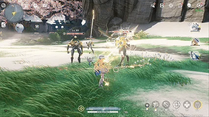
变奏、延奏是鸣潮战斗系统的根基，不仅是辅助角色提供增益的“窗口”，同时还是前台角色入场的“润滑剂”。
在通常《鸣潮》的主C变奏机制中，多为伤害或进行快速启动，同时变奏还能获得更多共鸣能量（大招能量）让循环更为顺畅。在辅助的变奏机制中，大多数是加快循环时间。
关于延奏，则相对来说更为多样。
对于主C的延奏，有一些是造成较高的伤害，有一些是增加全队的伤害以提高整体DPS。
对于辅助的延奏，大部分都是辅助能力，甚至一个辅助的大部分辅助能力几乎全在延奏之中。所以在《鸣潮》的角色设计中，辅助角色的协奏速度(战场时间)也决定了一个辅助角色的强度。
若一个辅助角色延奏给予的拐力、辅助足够但协奏时间较长，反而并没有那么出彩，因为这会挤压主C的输出空间，从而导致整体的DPS下降。
而一个辅助角色可能拐力并没有那么出彩，但是协奏速度较快，那么即便辅助能力较弱也能够快速启动队伍的整体输出。
总结：协奏的设计能最直观体现角色的定位与设计，而辅助角色对于协奏必须极其重视。其中本文档所要介绍的馨便是充分利用该系统。
2.2.2 共鸣回路
共鸣回路用最简单的游戏术语解释便是：一个角色专属的被动。
一个角色的差异、一个角色的主要玩法全集中于共鸣回路，在接下来对莎莉娜、馨的介绍中，共鸣回路也应当是最先查看、最先理解的一段。
共鸣回路在《鸣潮》游戏中通常位于血量上方，玩家能够轻易地看到当前共鸣回路的状态、能量。所以，在《鸣潮》的角色设计中，大部分角色都会因为共鸣回路具有两种不同系统从而呈现多种状态，例如：
2.1的菲比，就有在能量条满时通过选择长按共鸣技能键（E）或者选择按重击键（长按鼠标左键）来进行两种形态的切换（辅助形态和伤害形态）
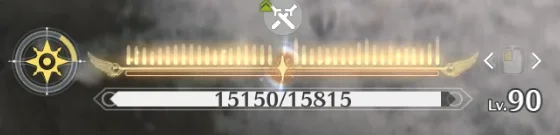
2.4的卡提西亚，当使用共鸣解放时（R/大招），共鸣回路条就会从之前的三剑转换为全新的能量条，而能量条打满即可释放第二段共鸣解放，造成巨额伤害。
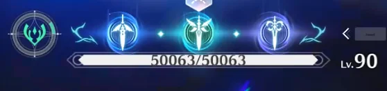
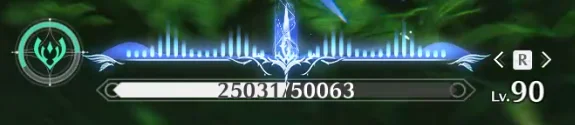
3.3的绯雪，在常态的共鸣回路即为三段能量条，通过攻击能够积攒能量，当能量满时即可按住重击键（长按鼠标左键）造成伤害，并解锁共鸣解放；而在释放共鸣解放后便会进入新的状态，而此状态同样具有全新能量条——总而言之，就是积累、消耗能量条来获得资源，然后进行爆发输出（第二段大招）。
莎莉娜的共鸣回路，则相似于绯雪，常态需要积攒“魔源”来解锁共鸣解放进入新的状态；而魔源又需要释放共鸣技能和消耗“紫炎”获得。
馨的共鸣回路，则相对与例子不同，馨可以通过积攒常态能量条来转换为新状态，新状态又能够积攒新能量条来转换回常态。常态和新状态功能不同、效果不同；玩家或许需要进行抉择。但在此不再赘述。
总结：共鸣回路的设计深度等同于一个角色的设计深度，一个角色是否好玩、一个角色是否新颖几乎都是由共鸣回路所决定的。所以，莎莉娜、馨的技能设计也会充分围绕共鸣回路搭建。
2.3 其他系统简易讲解
关于共鸣能量：
如若角色没有特殊要求，所有角色释放共鸣解放都需要其共鸣能量达到满值，而提高共鸣能量的获取则是提高角色的共鸣效率（通常以武器词条、技能被动、声骸词条提供）
关于前台与后台:
《鸣潮》为三人小队制，同一时刻仅有一名角色在场上操作(前台)，其余角色在后台待命。切换角色即完成前台与后台的交替。
需要注意的是，后台角色并非“消失”——其延奏效果、被动与技能特效仍可持续生效，这正是辅助角色的价值所在。
本文档中馨的“目移”“注视”“夺取”等机制，均建立在后台角色仍可生效这一前提下。
关于合轴：
合轴在《鸣潮》中指：玩家当前角色释放某一特定技能、普攻段数，当前玩家会短暂留在场上，此时切换角色即可达到双人在场或三人在场的局面。若是此时切换回最初角色且最初角色仍留在场上，可以流畅衔接下一段数、技能派生。
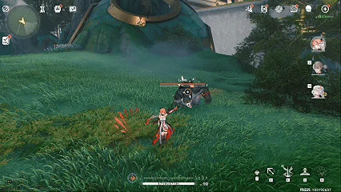
合轴是《鸣潮》战斗系统的灵魂，是其上限和玩家能力扩展的重要途径，有些队伍能够通过合轴的机制让三人频繁进行攻击，反而造成的伤害会高于数值更高的队伍。
关于声骸：
简单来讲——就是角色的外置装备，如何获取、升级本文档不再赘述。声骸不仅能够提供角色额外的属性，同时2件/5件同套装的声骸还能给予角色额外的能力。在《鸣潮》的角色设计中，有时声骸就是补足角色机制、伤害的另一条保障。
关于声骸主词条与 Cost:
声骸按“Cost(费用)”分为 1 / 3 / 4 三档，每名角色最多装备 5 个声骸，总 Cost 上限为 12。玩家通常搭配“1 个 4C + 2 个 3C + 2 个 1C”以凑满上限，简称记为“4C/3C/1C”。
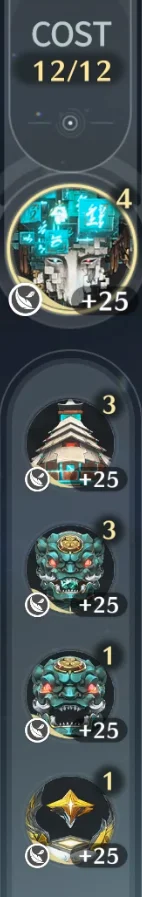
4C(主声骸): 主词条通常为暴击率 / 暴击伤害;
3C(共 2 个): 主词条通常为对应属性伤害加成 / 攻击力;
1C(共 2 个): 主词条通常为攻击力 / 生命值 / 防御力。
因此，后文若出现"4C/3C/1C"的写法，均指上述声骸主词条位置。以莎莉娜为例：常规输出角色会在4C选择暴击词条，而莎莉娜因暴击率被锁死，故 4C/3C/1C 全部改选“攻击力”主词条，形成与其他角色截然不同的养成方向。
关于加成与加深：
在鸣潮的数值计算中，加成和加深是独立的乘区，它们与防御乘区、暴击乘区、技能伤害一同相乘，这是构成队伍伤害体系的重要基础。
其中，加成和加深有本质的区别
——加成是加算:
例:一个角色提供20%伤害加成,自身另有10%伤害加成,
则总伤害加成系数 = 1 + (20% + 10%) = 1.30
(即:各加成百分比先相加,再加1)
——加深是乘算:
例:一个角色提供20%伤害加深,自身另有10%伤害加深,
则总加深系数 = (1+20%) × (1+10%) = 1.32
(即:各加深逐项相乘)
对于莎莉娜和馨的设计中，莎莉娜可以为自己提供加成，而馨的延奏可以提供加深。
对于加成和加深，由于加深为乘算，所以它更不容易被稀释，更加珍贵。
故在此先简单区分两个概念，以便后续理解。
关于属性与治疗效果:
伤害计算涉及的属性中，攻击力是基础基数，暴击率与暴击伤害决定暴击收益，属性加成、伤害加深等则分属不同乘区(见上条“加成与加深”)。
此外，鸣潮设有一个独立属性——治疗效果，用于提高角色的治疗量。
本文档中，馨的“暴击率与治疗效果互转”、莎莉娜“将额外暴击率/暴击伤害转化为攻击力”等设计，均会涉及上述属性的区分，故在此先作说明。
三、角色技能设计
前言：
本章节是本文档密度最高、信息量最大的章节，它包括了角色的市场定位、角色的技能介绍、角色专武设计、角色的设计目的、角色的基础数值模型（Excel）。
我会首先开始莎莉娜，然后才是馨；
在分别介绍完后，我会介绍其配队可能性，莎莉娜+馨的组合。
3.1 莎莉娜设计总览
核心吸引力：极致的反差。
莎莉娜是一名将“反差”这一视觉冲突做到极致的角色，在莎莉娜的身上，反差体现在：
外形的反差：莎莉娜身高较矮，身高约为1.3米。
第一层反差是外貌的反差，一个小孩外表的人，却表露出极其年长的成熟和不符合外貌的语调。
第二层反差是形态的反差，莎莉娜仅1.3米，但她常备的大剑约2.5米，武器与角色之间高度差值已经是足够抓人眼球的视觉反差。而莎莉娜真正的武器：那把长度为300米的巨剑，则又对大剑和莎莉娜产生极大视觉反差。
身份的反差：莎莉娜外表虽感觉是不同寻常的小孩，但实际上她的不同寻常非常夸张：一位仅有小孩外形的人，实际上是美学之城、浪漫之都，米约卡坎德的首席工程师，同时还是其缔造者之一。一个外形小孩的人却是整座城市的缔造者、守护者，这本身就是一种反差。
战斗的反差：在《鸣潮》中，极致的速度与流畅感是其区别于同类开放世界游戏和动作游戏的关键标签。在《鸣潮》，游戏战斗节奏极快（常30秒为一周期），角色攻击频率高，以及华丽的视觉与演出效果是其得以令玩家获得快感的首要原因。而莎莉娜的设计，则是对此的极度叛逆，或者说是莎莉娜的“孤高”：
莎莉娜是一名极长轴主C角色，她所在队伍的完整循环轴高达60秒，是现在《鸣潮》角色基本循环轴的两倍。但是，莎莉娜并不是彻底反叛、否定鸣潮的高速战斗畅快感，反而，莎莉娜的战斗感受不与《鸣潮》的战斗哲学相悖——莎莉娜只是将那份快速的、实时的快感全部集中于四剑降临的爆发。而这与《鸣潮》战斗系统的反差，正是莎莉娜有别于其他角色、但感受并不与其冲突的原因。
核心卖点：弱操作、轮椅，战场掌控者
莎莉娜的一切复杂系统、一切复杂设计，都为了一个目标服务——让玩家感到足够轮椅。
具体可以表现为：
莎莉娜的所有伤害全部集中于攻击力，玩家声骸无需刷取极致双暴词条，仅需主词条正确，即可获得足够完整的伤害；这一点是养成的轮椅。
莎莉娜输出轴较长，但相应的，她在一局（2分钟）需要打出的轴次数也变少了。在其他队伍需要至少打4套甚至5套的时候，莎莉娜仅需（也只能）打出2套就能赶上其他队伍的伤害，玩家不需要害怕在4套循环轴中是否会出现误触、打断的风险，莎莉娜2套的循环容错率容忍大多数错误。这一点是战斗的轮椅
莎莉娜虽基础血量较低（满级仅6000基础生命值），但其拥有强大的阻伤、阻死机制，只要不是完全无视交互，莎莉娜就是战场的炮塔堡垒，并且，其输出流程固定、无额外理解，只要明白基础循环，即可复读。这一点是操作的轮椅
记忆点：魔剑的极致爆发
莎莉娜的输出中，四次魔剑带来的输出占总伤80%，一次魔剑在屏幕闪出的百万伤害是激发玩家情感的第一视觉点；而在玩家操纵莎莉娜时，能无时无刻体会到她与她的魔剑在战斗中的掌控能力——毕竟，谁不会因为能控制一把三百米的巨剑而激动呢？
市场定位：周年庆高规格主C
莎莉娜是在米约卡坎德第三个版本up的角色，一般这个时间点是游戏的周年庆时期。一个强大的，在剧情中具有高地位、长铺垫，在主线剧情之中贡献大量“爆点”的角色；搭配着操作轮椅、伤害高、容错率高的特点，足以担任周年庆角色。
莎莉娜是米约卡坎德版本的第三位主C，前两位机制都相当特殊，莎莉娜则是唯一传统站场型主C(常规主C)；同时，莎莉娜是米约卡坎德7名可玩角色的故事中枢，每一个角色都与她相关联。
虽莎莉娜并非最重要角色，但其一定是米约卡坎德的灵魂。
3.2 莎莉娜技能设计
3.2.1 莎莉娜核心机制图以及玩家操作流程图
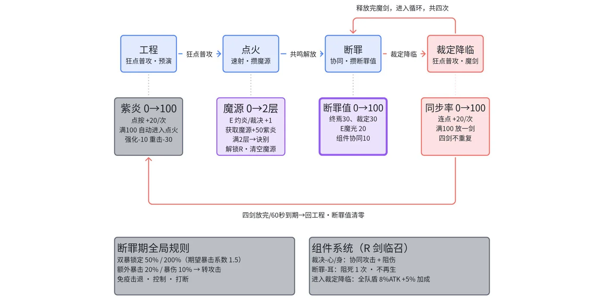
核心机制图↑
玩家操作流程图↓
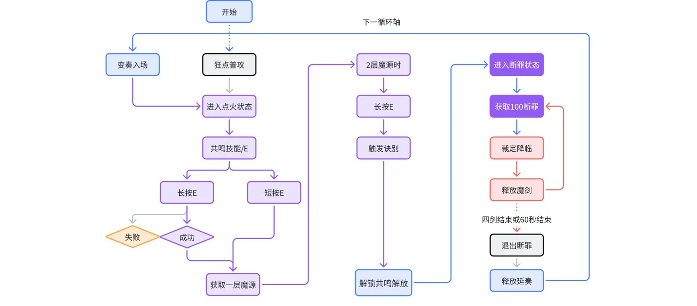
3.2.2 技能文本
3.2.2.1 共鸣回路
莎莉娜默认处于工程状态
紫炎灼剑
当莎莉娜处于工程状态时，
快速点按攻击键将会积攒紫炎。
紫炎获取满时莎莉娜将会自动进入点火状态。
点火状态
处于点火状态时，造成的每一次伤害都会消耗紫炎。
同时，莎莉娜解锁强化普攻-紫炎灼烈、空中攻击-紫炎灼烈、闪避反击-紫炎灼烈、重击-紫炎灼烈。
紫炎
紫炎最大为100值。
莎莉娜使用强化普攻-紫炎灼烈、空中攻击-紫炎灼烈、闪避反击-紫炎灼烈时，每造成一次伤害，将会消耗10点紫炎。
重击-紫炎灼烈造成伤害时，消耗30点紫炎。
断罪
处于断罪状态时，紫炎条替换为断罪条，断罪值最大值为100。
并解锁强化普攻-魔感协同、空中攻击-审判前兆、闪避反击-审判前兆、重击-审判前兆。
断罪状态下，莎莉娜的暴击率和暴击伤害将会分别固定为50%和200%，并将其永恒锁定，无法通过任何形式增加。
当断罪值达到100时，莎莉娜将会替换共鸣技能为共鸣技能-裁定降临。
断罪值可用下列方式获取：
重击-审判终焉、审判裁定、共鸣技能-“魔感剑光”，裁决-心-斩，裁决-身-切。
震颤魔剑
处于裁定降临状态时，莎莉娜将会释放固锁，暂停时间与动作，并随机释放“魔剑-降临”、“魔剑-震邪”、“魔剑-归亡”、“魔剑-决光”。
断罪条变为魔剑同步率条。
此时，可以快速点按攻击键获取魔剑同步率，同时解除固锁。
魔剑同步率共100点，每次点按攻击键可获得20点。
魔剑同步率集满后，将会继续释放魔剑，魔剑每次释放不同且无法重复释放，释放后退出裁定降临状态且断罪值清零，断罪状态最多进入四次裁定降临状态。
//若此次魔剑未暴击，将会增加莎莉娜断罪值获取速率，直至下次释放魔剑。
//新更新，未验证
断罪状态最多持续60秒。
当断罪状态持续时间结束，或释放四次魔剑后。
莎莉娜解除断罪状态，回到工程状态。
3.2.2.2 常态攻击（简化描述）
由于莎莉娜各技能文本都相对详细，且具有一定理解成本，故在此不仅是因篇幅所限，同时是为了阅读者更简单理解，所以不会贴入原文。
莎莉娜的每一个状态“工程”“点火”“断罪”都拥有不同的常态攻击效果。
其中“工程”与“点火”均称为“常态”。
普攻：
工程状态时，莎莉娜具有三段普攻，但攻击速度较慢、伤害较低。
工程状态时，玩家可以连续点按攻击键（狂按鼠标左键）积攒紫炎，每次连续点按可积攒20点，大约连续点五次后即可自动切换至点火状态。
——工程状态仅作一个动作：狂点普攻键进入点火状态。
点火状态时，莎莉娜的普攻将会强化：
莎莉娜的普攻段数增加为5段，且伤害、攻击速度变快。
莎莉娜此时可以使用重击-紫炎灼烈：造成湮灭伤害，并击飞目标。
空中攻击没有特殊，不论述。
断罪状态时，莎莉娜的普攻会转换：
莎莉娜普攻段数切换为3段，且伤害固定为1；
但会召唤裁决-身和裁决-心进行协同攻击。（裁决-身、裁决-心会在共鸣解放详述）
断罪状态时，莎莉娜具有两种重击：
重击-审判前兆：造成湮灭伤害，并击飞目标。
莎莉娜释放普攻第三段时，使用重击会释放重击-审判终焉
重击-审判终焉：获取30断罪值，令裁决-心、裁决-身一同进行协同攻击（20断罪值）。
空中攻击-审判前兆
在空中至多进行最多2段连续攻击，造成湮灭伤害。
每次攻击的延迟时间后，令裁决-心、裁决-身进行协同攻击。
在进行第二段连续攻击后短按攻击键，将会释放审判裁定。
审判裁定
下落并造成湮灭伤害，获得30点断罪值。
同时令裁决-心、裁决-身一同进行一次协同攻击。
闪避反击不论述。
3.2.2.3 共鸣技能（简化描述）
由于莎莉娜各技能文本都相对详细，且具有一定理解成本，故在此不仅是因篇幅所限，同时是为了阅读者更简单理解，所以不会贴入原文。
莎莉娜位于“点火”“断罪”状态时，会有不同的共鸣技能。
在“点火”状态下，共鸣技能分为两种：
当短按共鸣技能键，触发共鸣技能-“灼炎”
共鸣技能-“灼炎”：造成伤害并获取一层魔源；每一次普攻造成伤害将会减少共鸣技能的冷却时间。
当长按共鸣技能键，触发共鸣技能-“裁决”
共鸣技能-“裁决”：形成一个护盾阻挡伤害，若阻挡未成功则造成伤害；若阻挡成功则造成伤害的同时获得一层魔源。
当魔源具有2层时，会立即解除共鸣技能的冷却，且仅能释放共鸣技能-“裁决”。
当释放共鸣技能-“裁决”时身上具有两层魔源，那么将会自动触发共鸣技能-“诀别”。
共鸣技能-“诀别”：造成伤害并解锁共鸣解放-剑临。
在“断罪”状态下，共鸣技能分为两种：
当短按共鸣技能键，触发共鸣技能-“魔光判决”
共鸣技能-“魔光判决”：莎莉娜会飞入空中并让裁决-心、裁决-身进行一次攻击（20断罪值）
当长按共鸣技能键，触发共鸣技能-“魔感剑光”
共鸣技能-“魔感剑光”：造成伤害并获得20断罪值。
若莎莉娜处于断罪状态，且断罪值已满时；
共鸣技能将替换为共鸣技能-“裁定降临”。
共鸣技能-“裁定降临”
莎莉娜释放全部组件，将裁决-心、裁决-身、断罪-眼、断罪-耳释放至目标身前，此时，组件将会完全控制范围内的所有目标，并立即进入裁定降临状态。
3.2.2.4 共鸣解放（简化描述）
由于莎莉娜各技能文本都相对详细，且具有一定理解成本，故在此不仅是因篇幅所限，同时是为了阅读者更简单理解，所以不会贴入原文。
共鸣解放-剑临：
让莎莉娜进入断罪状态。清除魔源；并增加莎莉娜基础攻击力50%。
同时，还会召唤裁决-心、裁决-身、断罪-眼、断罪-耳。
简单描述：
裁决-心和裁决-身等同于莎莉娜在断罪状态下真正的平A，每次造成伤害会获得10断罪值。
断罪-眼为装饰，实际上没作用。
断罪-耳为生存机制：
当莎莉娜受到伤害时，它会消耗一次裁决-心或裁决-身来抵挡这个伤害，当消耗后 被消耗的组件无法继续造成伤害，2秒后再生。
若莎莉娜此次受到的伤害会造成死亡，断罪-耳会消耗自己阻挡此次伤害，并且恢复莎莉娜血量。但断罪-耳不可重生，在断罪-耳消耗后莎莉娜不再具有阻挡伤害机制。
“魔剑-降临”、“魔剑-震邪”、“魔剑-归亡”、“魔剑-决光”
四个技能数值相同、效果相同，仅动画不同。
3.2.2.5 变奏技能
攻击目标，造成湮灭伤害。
并且立即处于点火状态。
若已进入点火状态，则挥砍目标，造成湮灭伤害。
释放该技能后一定时间按下普攻，将会释放强化普攻-紫炎灼烈第2段。
若莎莉娜处于断罪状态，
飞入并挥砍目标，造成固定值为1的湮灭伤害，令裁决-心、裁决-身进行协同攻击。
释放该技能后一定时间按下普攻，将会释放空中攻击-审判前兆第2段。
3.2.2.6 延奏技能
附近队伍中所有角色获得永恒，持续30秒。
永恒
角色获得的增益性buff持续时间将会暂停，直到莎莉娜再次入场。
在永恒持续时间内，队伍获得的所有增益性buff都会不消耗时间，若是同名buff则重新开始计算持续时间，直到莎莉娜再次入场。
若在莎莉娜再次入场前永恒持续时间结束，立即清空全队全部增益性buff。
3.2.2.7 固有技能
永恒固锁
处于断罪状态时，莎莉娜免疫击退、控制。
此外，释放共鸣解放-剑临时根据自身获得的额外暴击率、额外暴击伤害，转换成等比例的百分比攻击力提升。具体为暴击率的20%，暴击伤害的10%。
此次转换在固定暴击率、暴击伤害之前。
名为爱的魔法
处于断罪状态时，每次进入裁定降临将会给予全队一层基于莎莉娜8%攻击力的护盾，持续20秒。莎莉娜在通过这种方式获取护盾时，全队的全类型技能加成提升5%（共鸣技能伤害加成，共鸣解放伤害加成，普通攻击伤害加成，重击伤害加成）。持续到下一次莎莉娜退出断罪状态。
莎莉娜天赋加点可获得12%攻击力和12%湮灭属性加成。
3.2.2.8 共鸣链（商业性）、专武以及专属声骸套装设计
共鸣链：
1. 镜面倒影的永恒
莎莉娜释放“灼炎”、“裁决”时免疫抗打断。同时，共鸣技能“灼炎”、“裁决”、“诀别”、“魔感剑光”获得25%伤害加深。其次，莎莉娜首次进入点火状态时，立刻恢复满协奏值。
2. 命运瞬然的永恒
固有技能“名为爱的魔法”升级，现在，莎莉娜每一次释放魔剑将会增加2层护盾。
//此外，即使魔剑暴击，也会提升断罪获取速率。
//新更新，未验证。
3. 记忆不却的永恒
断罪状态下，莎莉娜的暴击率和暴击伤害将会分别固定为100%和250%。
4. 孤傲诀别的永恒
莎莉娜进入断罪状态额外获得20%攻击力加成
5. 不灭誓言的永恒
若断罪-耳抵挡了一次死亡，将会恢复莎莉娜60%的生命值。同时，裁决-心、裁决-身也可以阻挡一次死亡，但阻挡死亡后将不再重生，直到莎莉娜下一次进入断罪状态。
6. 爱的永恒
莎莉娜获取魔剑同步率时，不会再解除永恒固锁，而是在一次魔剑伤害结束后。固有技能“名为爱的魔法”升级，现在，莎莉娜每一次由“名为爱的魔法”所增加的全类型技能加成提升至10%。
专武：
专武类型：音感仪。
名称：KHG-021视觉单元 黯之眼
专武1精：
主词条攻击力：675
副词条大攻击力加成：18.2%
专武特效：攻击力提升12%，佩戴者所造成的湮灭伤害将无视目标8%防御。同时，佩戴者攻击力超过5000的部分，每500攻击力为佩戴者增加10%湮灭属性加成，最多仅能增加60%。
声骸套装：
2件套：湮灭属性加成10%
5件套：当角色攻击力大于3500时，提供50%攻击力加成，当角色大于5500攻击力则增加25%共鸣解放伤害加深。
3.2.3 核心机制总结
莎莉娜是一名循环轴达 60 秒的长轴战场主C，其 80% 的核心输出集中于断罪状态下的四次魔剑。游玩流程为：前期获取资源进入断罪状态，后期在断罪状态中循环资源以释放最多四次魔剑。
核心机制：
锁定双爆：进入断罪状态后，暴击率与暴击伤害锁定为 50% / 200%。
属性转化：通过武器、队友增益、声骸词条获得的“额外暴击率/暴击伤害”，按比例转化为攻击力。
延长buff：延奏效果可锁定队伍 Buff 持续时间，覆盖长轴，避免覆盖不全导致的伤害浪费。
玩法差异：
由于莎莉娜魔剑数值极高（5000%），任何挤压她站场时间的行为都会拖累整体输出。因此，莎莉娜的玩法相当“孤高”，她的队友应当全额辅助莎莉娜并快速站场，颠覆了传统的“主C+副C+辅助”逻辑，要求“主C+双辅助（双保一）”配队。队友必须具备全额辅助莎莉娜且极速站场的能力，以此最大化她的长轴收益。
配装差异：
由于双爆转化为攻击力，莎莉娜的所有数值极度集中于攻击力（正常配队下可达 6000~7000+）。因此，声骸配装放弃了传统的“4C暴击/爆伤、3C属伤”，直接采用极其暴力的“4C/3C/1C全攻击”策略，这种极端的养成导向，既降低了玩家刷取双爆副词条的压力（养成轮椅），也保证了数值膨胀的可控性。
3.2.4 设计目的
1.为何莎莉娜在进入断罪状态时需要锁定暴击率和暴击伤害？
第一层，游戏层：
莎莉娜的魔剑倍率极高（5000%），倍率高的原因是其核心爽感全都集于四次魔剑释放的破坏力与数值。若是一把三百米长的巨剑伤害堪堪仅有几万，那么不仅玩家大半天打出的只有挫败感和失落，玩家也会感觉视觉欺骗。若是巨剑伤害有几十来万，魔剑的视觉效果的确具备可信度，但魔剑的落下需要花费较长时间的轴长才能打出，当莎莉娜花的时间比其他队伍长，而伤害又不出众时，莎莉娜就不具备合理的抽取价值。
而极高的倍率，夸张的大数字（正常配队一剑约120w+），不仅在视觉层面上给予玩家可信度的同时，还能够平衡莎莉娜长轴的缺陷，让其dps与正常队伍相近。
但这和锁定暴击率和暴击伤害有何关系呢？
原因——为了控制伤害。
莎莉娜的魔剑具备极高的伤害，同样的，在数值膨胀的控制方面也是一大挑战。而锁定暴击率和暴击伤害就是让这个数值可控；当没有暴击率、暴击伤害这类随机性、上下限差别大的因素，全部的伤害增加减少与否只与一个确定的、可控的、单一的数值“攻击力”有关时，魔剑的伤害就变得可控：只需要管理莎莉娜的攻击力高低，即可控制魔剑伤害以及总体伤害，在后续的数值模型展示中，我会更直观的表现这一点。
第二层，叙事层：
“永恒固锁”是莎莉娜的共鸣力，也是莎莉娜一切悲伤与痛苦的本源。因为“永恒固锁”，她无法正常长大；因为“永恒固锁”的局限，她仅能锁住自身与其造物，她生命中真正珍视的东西：“爱”、“记忆”、“情感”全都无能为力。
“永恒固锁”是莎莉娜的力量，是莎莉娜的故事核心。
而断罪状态锁定暴击率、暴击伤害，便是莎莉娜的“永恒固锁”在游戏机制中的叙事。
并且，莎莉娜的延奏技能，也是其“永恒固锁”在游戏机制中的直接呈现。
2.莎莉娜的延奏技能为何是一个辅助性技能？莎莉娜1链协奏值点火即满意味什么？
在配队上，《鸣潮》目前的辅助buff通常仅有25秒或者30秒，而莎莉娜的循环轴长大约60秒，其中莎莉娜站场所需时间点火状态占据10秒，断罪状态占据30秒，共40秒。
此时就出现了一个问题：目前的角色根本支撑不了莎莉娜的完整轴长，在莎莉娜最高伤害的第三剑和第四剑中，buff覆盖率是一个问题。
而这就是莎莉娜延奏技能所解决的事情：
首先先说明：莎莉娜延奏值在常态切换至断罪态的流程后就满了。所以：当莎莉娜的队友的延奏buff仅有25秒、30秒时，莎莉娜可以开局先尝试进入断罪状态，再切换三号位或二号位，让其上满buff；此时再切回莎莉娜，因为莎莉娜延奏技能“永恒”锁定buff时间的机制，可以让莎莉娜在断罪状态下吃满队友buff。
不过这也有些许问题：当莎莉娜提前进入断罪状态时，断罪状态会提前计时，若三号位和二号位的循环没有控制在30秒以内、莎莉娜在断罪状态的时间高于三十秒，都很有可能造成断罪状态提前结束——所以相对来说容错率降低了些许。
当然，这是有解决方案的。
那就是接下来会介绍的“馨”，其他机制暂且不谈，就单60秒延奏就已经是作为莎莉娜最适配的队友了。
而对于一链，让莎莉娜进入点火状态即刻充满协奏值，则是加速延奏的速度，当莎莉娜开局即可连续点按普攻进入点火状态并可释放延奏时，莎莉娜开局即可锁定buff，这样不仅拓展了莎莉娜与其他三号位、二号位的配队可能性，同时还能不依赖馨的长增益能力。
3.为何要设计一个常态循环？让莎莉娜的技能设计直接从掌控魔剑开始不好吗？
我会从两个方面解释。
1.游戏层：
这样改变的本质就是将莎莉娜从长轴C改变为正常的主C循环轴，这个问题核心实际上和第一点相似：如果莎莉娜轴变短了、如果莎莉娜全程都是断罪状态来控制魔剑攻击，那么要如何衡量伤害呢？如果一把三百米的魔剑造成的伤害较低，那会造成视觉欺诈、以及减少视觉可信度——因为一把三百米的剑伤害就得是毁灭性的。但是，若是真的伤害也设定为毁灭性，那么数值的平衡将会非常难做。别的队伍在30秒仅能打出两百万、一百万、或者仅仅只是频率较高的几十万，而莎莉娜则能打五百万！这是极大的数值膨胀。
莎莉娜轴长本身——就是控制数值的一种手段。
2.叙事层：
莎莉娜最得意的作品——这把三百米的巨剑。
其一，在故事中，巨剑为米约卡坎德军事的“秘密武器”，本身就不是常使用的东西。其二，虽然莎莉娜非常满意这个作品，这把剑是其能力以及莎莉娜对魔法的理解、对科学的创造集一体的完美作品，但这把剑锻造最初的目的，是莎莉娜为了终结自己所作。
若莎莉娜频繁、无代价的使用这把剑，是对叙事的反叛、是角色的悲哀。
机制可以不够帅、机制可以不够强，但机制一定要贴合角色、尊重角色，这便是我对角色设计的理解——机制服务于叙事、叙事生长出机制。
4.莎莉娜有三个状态机，其中一个状态“工程”仅仅只有两个功能：1.笨重且无意义的普攻 2.连续点按普攻的点火。那为什么不直接把这个状态删了呢？它也不影响轴长啊。
两个方面。
游戏层：“工程”状态的连续点按的逻辑与魔剑降临、获取同步率的操作逻辑是相同的。简而言之，这是玩家对操作的预演，就像是优秀的游戏的新手教程一样：不给你提供详细的说明，而是设置一些直觉让你自行明白什么按键作什么事；“工程”状态需要连续点按攻击键来切换至点火状态的设计目的与之是同构的。让玩家在每一次开场都熟悉这个操作方式，到了魔剑真正即将降临之时，玩家已经习得了肌肉记忆，同样进行连续点按操作。
同时，连续点按才能释放魔剑也是为了增加游玩的趣味性：毕竟莎莉娜的循环逻辑已经够简单了，如果还没有这种方式来进行操作，莎莉娜真就失去“动作之魂”了。
叙事层：这是一种启动的仪式感，是一种浪漫化表现。
莎莉娜的剑是一把笨重的剑，但同时可以进行点火让莎莉娜都能轻松挥舞，点火、启动这份仪式即有工程的厚度，也有魔法的幻想——而这便是莎莉娜所追求的。
5.莎莉娜专武、声骸套装的设计是怎样的？
莎莉娜的专武简单来说就是让莎莉娜安心地叠攻击，让叠攻击的收益获得最大。莎莉娜的声骸、技能都不怎么提供增伤，在0链哪怕是第四剑所能获得的额外增伤也仅有固有技能“名为爱的魔法”里的20%增伤。在莎莉娜身上，加成区和加深区是一个贫乏的区域。而专武则是提供一定的增伤，让莎莉娜伤害更加平滑。
声骸套装设计同理，但更多是弥补莎莉娜数值在加深区的空白。
6.莎莉娜关键共鸣链（3、6）机制是怎样的？为什么这么设计？
莎莉娜共鸣链3链为：
记忆不却的永恒
断罪状态下，莎莉娜的暴击率和暴击伤害将会分别固定为100%和250%。
目的：
让莎莉娜在断罪状态下50%暴击率的劣势直接移除。莎莉娜3链前的50%暴击率在魔剑的伤害下实际上有一个隐性机制，那就是必定有两剑不暴击、两剑暴击，这是为了减少玩家凹度，不然玩家可能会为了四剑全爆而反复重开，变相地提高了容错率。三链的作用，就是彻底排除未暴击的可能。
这不仅是直接让不暴击这一可能性彻底被去除，增加了容错率，还显著提升了莎莉娜的数值；并且，由于莎莉娜可能不暴击的机制，导致莎莉娜相对来说依赖馨的暴击补足机制，三链则可以完全解绑馨——而共鸣链3的设计，一举三得。
莎莉娜的共鸣链6链为：
爱的永恒
现在，莎莉娜获取魔剑同步率时，不会再解除永恒固锁，而是在一次魔剑伤害结束后。固有技能“名为爱的魔法”升级，现在，莎莉娜每一次由“名为爱的魔法”所增加的全类型技能加成提升至10%。
目的：
直接增加加成数值，让莎莉娜输出变高。
从机制层面上变相增加莎莉娜的数值：当莎莉娜共鸣链抽取至6链时，莎莉娜的魔剑动画将不会再浪费任何时间，变相地缩减了莎莉娜的轴长——从而让莎莉娜打出更多剑、让莎莉娜的伤害增加了。即便莎莉娜六链并没有增加什么数值，仅仅加强了一个小机制，也能做到让莎莉娜伤害近乎翻倍的效果。
3.3 莎莉娜基础数值模拟
3.3.1 莎莉娜基础数值模型总览
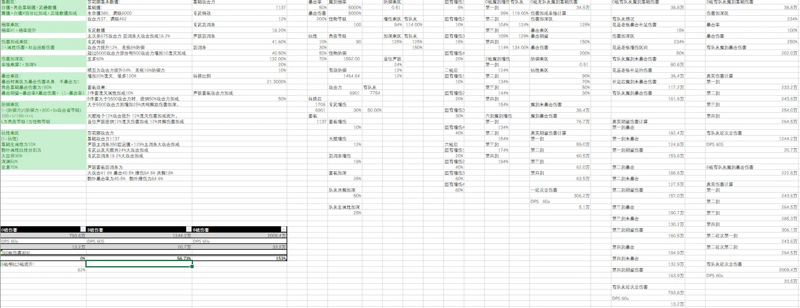
数值模型由Excel所作，仅表现莎莉娜各属性转换公式、重要共鸣链总伤害与DPS，以及其受攻击力控制情况；
目前由于战斗原型Demo未完成，关键轴时长、具体招式帧级表无法具体定夺。
故60秒循环轴、40秒站场时间为设计目标。
3.3.2 莎莉娜断罪状态双爆转换公式
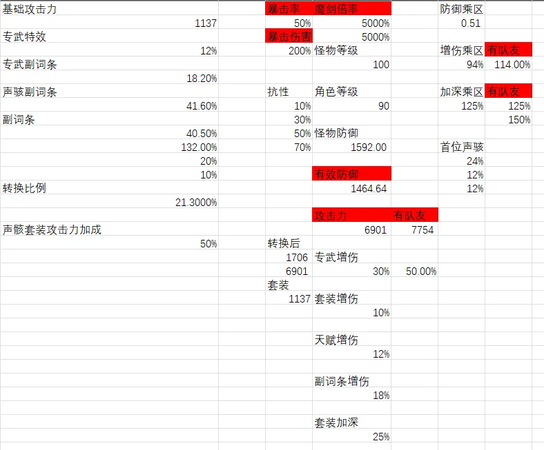
额外暴击率*转换比例（当前为20%）+额外暴击伤害*转换比例（当前为10%）
目前将转换比例定为20%与10%是为了让双爆词条的价值降低，减少上下限差值。
不过，目前数值上，莎莉娜的攻击力相对过高（是在断罪状态下将基础攻击力*50%所致，目前这种转换不属于《鸣潮》官方转换），可能会改动——比如断罪状态下获得100%攻击力加成，即增加1137攻击力，然后将双爆转换比例增加至40%及20%
对于究竟是否要让养成（双爆词条）上下限缩小，需市场验证。
调整双爆公式演示视频：
[9月9日(3).mp4]
3.3.3 莎莉娜0、3、6链伤害DPS计算
莎莉娜定位为 7.0+ 版本的核心输出角色，伤害设计仅以 0 链为完全体基准；
3/6 链按共鸣链梯度自然上浮，不作为本节控制目标。
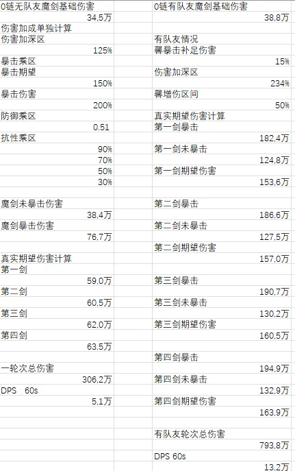
莎莉娜0链DPS 抗性为90%
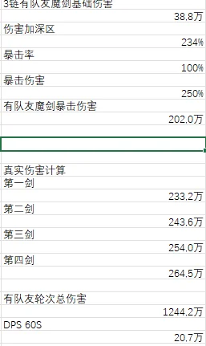
莎莉娜3链DPS 抗性为90%
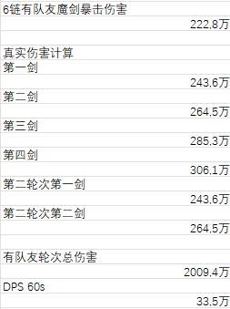
莎莉娜6链DPS 抗性为90%
（其中总伤害判断公式为：4魔剑伤害/80%——将魔剑伤害设置为循环总伤的80%，粗略计算）
莎莉娜伤害数据（60s DPS；攻击力 7789、深化乘区 2.34；增伤区有所差别、不阐述）：
链数 | 60s DPS | 链间相对 |
0链 | 13.2w | — |
3链 | 20.7w | +57% |
6链 | 33.5w | +62%（相对3链） |
当前版本对标（鸣潮 3.5 主流队伍 0 链数据；数据来源：B 站用户 QuichilOvO）：
队伍 | 0链DPS | 3链DPS | 6链DPS |
秧千穗（高难轴） | 13.02w | —— | —— |
秧千穗（轮椅轴） | 10.58w | 14.98w | 24.51w |
绯洛穗 | 10.45w | 15.83w | 25.15w |
爱达千 | 9.3w | 13.04w | 23.92w |
7.0 膨胀预留接口（当 7.0 版本正常队伍 DPS 超过当前时调用）：
接口 | 分类 | 说明 |
调整整体攻击力阈值/提升 | 数值层 | 粗暴方案，落地最快但收益最窄 |
固有"名为爱的魔法"5% 全类型技能加成 → 改为按四剑分别赋加深；（示意量级：第一剑 10%、第二剑 20%、第三剑 30%、第四剑 40%；落地量级待 demo 验证） | 机制/数值层 | 深化梯度可在 demo 后按需调整 |
退出断罪状态时增加收尾动画/伤害结算 | 机制/资源层 | 纯结算动画，不影响战斗时间与轴长 |
仅调整攻击力改动总伤视频演示：
[9月9日(4).mp4]
3.4 馨设计总览
核心吸引力：美
馨的核心吸引力单一而直接——就是“美”。作为以“美学”为立城之本的米约卡坎德中最负盛名的美人，馨的容貌、气质与花店所营造的整体氛围，是她留给玩家的第一印象。鉴于本文档以文字为主、不附立绘，此处对“美”不再展开，其真正的差异化价值，交由后文的“陪伴感”与“注视”承载。
核心卖点：陪伴感
在游戏中，馨无论何时都在陪伴着玩家，即便她已经离场，也能时刻让玩家知道她依然在身旁。同时馨能够给队伍带来相当全面的辅助，只要玩家不要太任性、莽撞，馨的拐力能够帮助队伍全方位的提升。
在故事中，馨虽然并不像莎莉娜直接与主线相关联，力量也相对平庸、无法参与深度主线。但是馨是在故事中陪伴玩家最久的角色；她的美与温柔，正是玩家在故事中体会到温暖的主要原因。
记忆点：注视
在故事中，馨的力量就是夺取他人的目光，分为主动夺取与被动夺取，所以馨是不被“主动注视”的人；而馨身世原因，她也不敢去“主动注视”人。直到玩家的出现。
在游戏中，馨由于技能机制，会主动承担队伍的所有伤害，而玩家若是需要她的拐力，玩家就必须让她承担伤害。正是馨会有暴毙、辅助能力丢失的问题，所以玩家即便在操纵其他角色，而要偶尔“主动注视”馨，观察一下馨的血量，以免馨暴毙，反而拖慢了循环轴。
注视，便是玩家在故事、游玩双层面，都需要去做，也都记忆深刻的行动。
市场定位：通用治疗辅助
馨具有超强的奶量，拥有全队伤害转移机制；还能够提供长时间的加深buff以及高额的三围加成，并且还有暴击补足机制帮助队伍打伤害。光只是看到馨能够提供的增益，馨的强度价值就是极高的。
不过，成为唯一选择、淘汰其他所有三号位，并不是馨的定位。所以，在技能设计中，我会让馨成为一个具有“隐性代价”的复合辅助。虽然馨依然是通用、且具有高价值的辅助角色，但并不是完全淘汰其他角色、且并不挤压它们的生态位。
3.5 馨技能设计
3.5.1 馨核心机制图以及玩家操作流程图
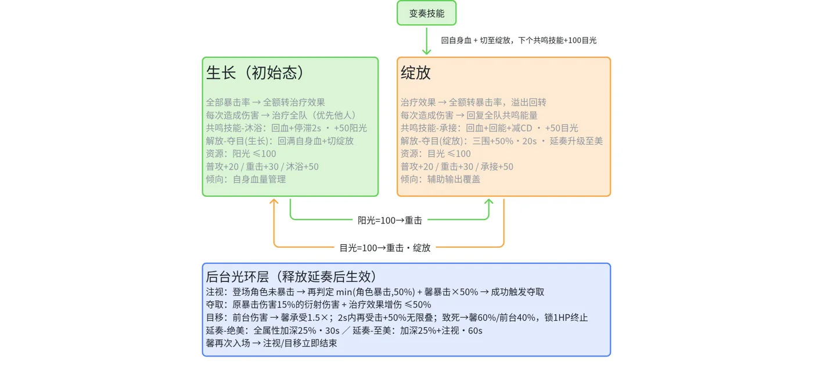
核心机制图↑
玩家操作流程图↓
3.5.2 技能文本
3.5.2.1 共鸣回路
共鸣回路 花期
馨初始处于生长。
生长
馨在生长时，可获得阳光。
馨的全部暴击率，将会全额转换为治疗效果。
馨每一次造成伤害会恢复全队血量，优先治疗馨以外的队伍角色；若队伍其他角色生命已满，将全额治疗馨自身。
当阳光值达到100后，释放重击，可切换至绽放。
绽放
馨在绽放时，可获得目光。
馨的全部治疗效果将会全额转换为暴击率，若此时暴击率超出，溢出的暴击率将会全额转换为治疗效果。
此时馨每造成一次伤害会恢复全队共鸣能量，若队伍其他角色共鸣能量已满，将全额恢复馨自身。
当目光值达到100后，释放重击·绽放，可切换至生长。
阳光获取规则
阳光上限100点。
处于生长时，释放普攻、重击、闪避反击时，或共鸣技能-沐浴时，获得阳光。
目光获取规则
目光上限100点。
处于绽放时，释放普攻-绽放、重击-绽放、闪避反击时，或共鸣技能-承接时，获得目光。
3.5.2.2 常态攻击
常态攻击 播撒
普攻
进行最多3段的连续攻击，造成衍射伤害。
每次攻击获得20点阳光
普攻-绽放
进行最多3段的连续攻击，造成衍射伤害。
每次攻击获得20点目光。
重击
消耗耐力攻击目标，造成衍射伤害。
每次获得30点阳光。
重击-绽放
消耗耐力攻击目标，造成衍射伤害。
每次获得30点目光。
空中攻击
消耗耐力进行空中下落攻击，造成衍射伤害。
闪避反击
成功闪避后一定时间内短按普攻，将会攻击目标，造成衍射伤害。
每次获得30点阳光或目光。
3.5.2.3 共鸣技能
共鸣技能-沐浴
处于生长时，可释放。
根据自身最大生命值回复全队生命值，优先治疗馨以外的队伍角色；
若队伍其他角色生命已满，将全额治疗馨自身。
同时会停滞周围目标动作，持续2s。
获得50点阳光。
共鸣技能-承接。
处于绽放时，可释放。
根据自身最大生命值回复全队生命值，优先治疗馨以外的队伍角色；
若队伍其他角色生命已满，将全额治疗馨自身。
并回复全队共鸣能量，减少馨共鸣解放冷却时间。
获得50点目光。
3.5.2.4 共鸣解放
共鸣解放 夺目
释放该技能时，若处于生长，则会恢复馨的全部生命值，并立刻切换至绽放。
释放该技能时，若处于绽放，则会增加全队50% 生命值上限、攻击力、防御力。
持续20秒。
并替换下次延奏技能-绝美为延奏技能-至美。
3.5.2.5 变奏技能
变奏技能 茄子~
恢复自身血量，并切换至绽放。
同时，下一次释放共鸣技能，将会恢复100目光。
3.5.2.6 延奏技能
延奏 完美
延奏-绝美
队伍中的角色全属性加深25%。
持续30秒。
延奏-至美
队伍中的角色全属性加深25%，队伍中的角色获得注视。
持续60秒。
注视
登场角色若造成一次未暴击伤害，将会根据登场角色自身暴击率的100% 与馨暴击率的50% 再次进行一次判定。若此次判定成功，馨将会释放夺取。
登场角色最多提供50%。
夺取
馨造成一次登场角色此次未暴击伤害的原暴击伤害的15% 的衍射伤害。
同时，此次伤害还会受馨的治疗效果获得额外增伤，最多50% 增伤。
原暴击伤害
登场角色该次未暴击的伤害，若其触发暴击时原本会造成的伤害值。
释放延奏技能-绝美、延奏技能-至美时，队伍中的角色获得目移。
目移
登场角色将不会受到伤害，转而由馨承接此次伤害的1.5倍伤害。
不会受到伤害意味登场角色血量不会削减、不会被打断、甚至没有受伤提示。
若目移在2秒内又承受了一次伤害，此次伤害倍率将会增加50%，可无限叠加；
若登场角色在2秒内不再受到伤害，伤害倍率回到1.5倍。
若此次伤害会使馨死亡，则此次伤害将由登场角色和馨一同承担，馨承担60%，登场角色承担40%；该次伤害会让馨最低生命值为1，并结束目移和夺取的持续时间。
当馨再次入场时，立刻结束注视、目移持续时间
3.5.2.7 固有技能
无法忽视的美
释放变奏技能时，恢复自身50点协奏能量，每20秒可触发1次。
当她看见你
馨获得的全部额外暴击伤害都将等比例转换为治疗效果。比例为50%。
在馨释放共鸣解放-夺目后，队伍中除馨的角色释放变奏技能时，将会延长夺目的持续时间20秒，最多2次。
馨天赋加点可获得12%治疗效果和12%生命值加成。
3.5.2.8 共鸣链（商业性）、专武以及专属声骸套装设计
共鸣链
共鸣链1 对视的悸动
馨释放共鸣技能-承接造成的治疗效果增加20%。
普攻、普攻-绽放、重击、重击-绽放、共鸣技能-沐浴、共鸣技能-承接免疫打断。
共鸣链2 恋爱的花期
夺取造成伤害后，将会增加登场角色10%暴击率，最大为30%。
当登场角色具有注视效果且暴击率大于或等于100%后，也能够触发夺取，此次夺取无法根据馨的治疗效果获得额外增伤。
共鸣链3 遮雨的外套
夺取造成伤害的20%将会治疗馨，此次治疗有10秒冷却。
共鸣链4 踮脚的合照
释放共鸣解放-夺目后，馨的生命值提升20%。
共鸣链5 羞涩的牵手
若在生长释放共鸣解放-夺目，此次释放不消耗共鸣能量，且立即使共鸣解放-夺目冷却结束。该效果有60秒冷却。
共鸣链6 真诚的告白
夺取造成的伤害倍率提升至50%，同时夺取将不再造成衍射伤害，而是造成真实伤害。
专武
眼中唯你 音感仪
攻击力500
暴击率36%
1阶 我的眼里只有你
生命提升12%。释放延奏技能时，将会在后台治疗自身最大生命值12%，若在后台受到伤害，则立即治疗自身6% 最大生命值，并给登场角色提供6% 最大生命值的护盾值。持续30秒，治疗会有3秒冷却。
声骸套装：
2件套：若携带者攻击力＞2000，攻击力提升10%；若携带者生命值>20000，治疗效果提升10%。
5件套：暴击率增加12%，携带者每一次造成伤害都会增加5%爆伤，最多30%。若队伍仅有一个角色，则携带者每一次造成伤害都会增加10%爆伤，最多60%。
3.5.3 核心机制总结
馨是一位将队伍受到的所有伤害转移至自身的辅助。与传统治疗位消耗“技能次数”提供治疗不同，馨改用“自身血量”来提前“治疗”前台角色——即让前台角色根本不受伤，由馨来承担。
核心机制：
目移（后台承伤）：替前台角色承受伤害，并提供“抗打断”效果。
夺取（未暴击补偿）：让前台角色未暴击的伤害接近暴击伤害。
形态切换：在生长（治疗状态）与绽放（辅助状态）间切换，实现暴击率与治疗效果的互换。
形态差分：
馨在生长态（治疗状态）时，由于暴击率全额转为治疗效果缘故，馨可以提供队伍大量治疗；此时馨是一名可以提供强力承伤保护且能够提供高额治疗的治疗辅助。
馨在绽放态（辅助状态）时，由于治疗效果将全额转为暴击率且溢出暴击率会转回治疗效果缘故，馨可以提供全队角色长时间增益性buff（60s）以及前台角色未暴击的伤害补足；此时馨是一名兼具高额拐力与强力承伤保护的复合型辅助。
设计代价（平衡限制）：
馨的承伤并非没有代价。她承受的伤害会逐次递增（1.5倍起），若短时间连续受击，会直接解除目移效果。为了恢复馨的血量，下一轮循环可能需要耗费额外时间，导致拖慢输出轴。
设计结论：
馨的承伤机制旨在提高队伍整体的容错率，而非让玩家肆无忌惮地无视交互。对于《鸣潮》这类动作游戏，这是必须的制约。
3.5.4 设计目的
1.为何要暴击率和治疗效果互相双转换？溢出了怎么办？
在最初的设计中，馨的技能机制是高额辅助与高额治疗二选一，形态的切换主要是由共鸣技能进行转换。但在最初的这份设计里，有几个无法忽视的问题：
不够通用，另一个形态意义不大。若真是辅助和治疗的形态二选一，无论在高难竞速、还是普通大世界战斗，治疗状态都是意义不大的形态。在大世界中，不太需要治疗；在高难竞速之中，生存本就是锦上添花，玩家也都会选择对队伍帮助最大的辅助形态。治疗形态最终成为了可有可无。
属性刷取困难。在最初的版本，若要辅助状态足够，需要一个奶位来刷取双爆词条——这也是最初我对馨的差异化价值设计，让她成为唯一一个需要叠双爆的奶位角色而非正常奶位需要叠的共鸣效率、生命值。但我在设计几版后，发现都无法真正将这个差异化排除，因为奶位叠双爆，属性会完全被浪费，如果属性完全只是为了辅助能力而对角色本身没有作用，那么这个设计针对性太强、且无比低级。甚至在初版，馨不仅需要刷取双爆词条，还需要刷取生命词条和共鸣效率词条，对于一个辅助来说，这是不必要的浪费，甚至会影响馨的抽取价值。
所以，馨最终的版本，解决了最初版本的两个最严重的问题：
她足够通用，形态都有用。馨在绽放状态释放的共鸣解放-夺目，提供的高额三围、延奏的长时间加深增益，是无论什么队伍都能使用通用辅助，而且她还能够为队伍提供高容错保障，无论是辅助、还是承担治疗，这一版的馨都做到了。同时，生长状态的馨并非无用，在馨血量不够健康、或者全队血量较低时，生长状态高额的治疗效果（150%+），能够瞬间恢复全队血量（馨自身血量可能无法保证），而馨，又是必然会遭受伤害的类型，馨天然需要治疗。当然，馨并非毫无代价的又能辅助又能解决生存压力，在接下来我会单独说明。
属性刷取简单。暴击率和治疗效果的双转换机制，让无论是暴击率还是治疗效果、甚至解锁固有技能“当她看见你”时连爆伤都能作为有效词条。由于治疗效果仅在声骸套装、武器特效、声骸主词条以及天赋中获取，所以并不会泛滥，能稳定得到的治疗效果为4C之中的26.4治疗效果。若馨选择44111（两个4C，3个1C）作为声骸配装，馨光4C就能提供自己26.4+26.4+10（声骸套装）=62.8治疗效果。加上五件套的效果以及技能天赋，馨无需任何副词条即可获得62.8+12（声骸套装暴击率）+12（天赋）+15（声骸套装爆伤）=101.8治疗效果。进入绽放态时，馨可以直接满暴！这还是没有加上专武的情况，所以，只要馨声骸主词条正确，馨的夺取能力可以无痛判定（当然前提是前台角色有至少50暴击率）。不过，距离夺取获得50%增伤，馨还缺少48.2治疗效果或暴击，所以意味着玩家还是可以在声骸刷取花费时间，获得更强增益。
在绽放状态下，溢出的暴击率（100%以上）也会转回治疗效果，并不会造成浪费；就算玩家已经达到毕业要求（150%暴击率/治疗效果），再往上叠也有效果——既能够让生长态回血增加，又能够在绽放状态也增添些回血效能。
2.就这个技能机制，馨是否有些全能了？集增伤补伤治疗抗打断为一体，妥妥三体人机制啊。
这一点，便是馨机制的闭环点。
馨的确是非常强大的辅助：
她能够提供超长时间（60秒）的加深增益。
她能够提供50%高额三围加成给队伍角色，以及夺取的暴击补足机制。
她能够承伤队伍伤害，甚至可以防止前台角色被打断。
她能够瞬间抬升血量。
她能够极快速协奏，第二轮循环站场时间能压缩至1秒。
就从这些效果来看，馨似乎过于“全能”，但这并非没有代价。
馨的核心承伤机制为“目移”，而目移的效果便是让前台角色不受到伤害转而伤害馨，这不仅让前台角色的“治疗”提前了，同时还获得了抗打断的能力，是近乎完美的保护。
但是代价则是：馨会受到1.5倍的伤害，若2秒内频繁受击，还会将倍率逐次递增，馨大多数情况只要连续受击4~5次就会解除目移效果。
这就意味着：馨的承伤能力并不是让玩家肆意不管交互、不去闪避/弹刀的纵容，而是偶尔失误的保底。这与“夺取”的功能是类似的——它不增加伤害，只帮你未暴击的伤害保底。
馨的所有设计都是为了“提高容错率”，无论是目移、夺取、还是60秒的buff，都只是为了提高队伍整体的容错率。
真正让设计闭环的，是目移与馨的所有增益绑定。
只要玩家让馨延奏，那么必定会触发目移，馨必定会因前台受击而受伤。而馨几乎所有增益性效果，全与延奏有关。
如果在第一轮循环中，玩家频繁受击，让馨的血线在一个不健康的情况下，那么第二轮循环开始，玩家就需要开始抉择——究竟是切换至生长状态替馨回到健康血线，还是硬着头皮继续让下一个循环被迫无伤呢？
若选择让馨恢复血量，那么就要消耗时间切换至生长慢慢给馨回血，这会让馨拖慢循环轴的速度；又或者切换至生长状态时立刻使用生长态的共鸣解放-夺目，直接回满馨的血量——但是这样就出现了问题，若夺目在生长态使用，而馨延奏的升级、三围数值的加成全是绑定在绽放状态的共鸣解放-夺目，玩家会白白浪费馨近乎一半的增益效果。
若选择强行让馨正常循环，而馨因为目移必定会受伤，所以前台角色必须得在这一轮循环中无伤才能不让馨提前结束增益效果。
所以，馨的强大增益并不是没有代价获取的，虽然受击本就不是在《鸣潮》高难中允许的，大部分人都不会尝试无视交互。而馨的增益所针对的，是那些以为有馨就能够无视交互、无视动作系统的玩家。
同时，馨的协奏速度很快，固有技能“无法忽视的美”能够让馨的协奏速度相当夸张，这也是为何馨在第二轮循环中站场时间能压缩到2秒内的原因。
这便是馨设计的有趣性：
若你没有滥用馨的承伤机制，馨的一切辅助功能都为团队的伤害、容错率有极大增益。
若是你滥用馨的承伤机制，馨的一切辅助功能都会拖慢团队速度、沦为可有可无的增益。
3.馨在后台，血量和夺取要怎么清晰看出来？
在鸣潮中，屏幕右侧会有队伍角色的头像，而在角色头像下方可以看到角色的血量、共鸣回路条。所以馨在后台的血量是可以通过撇一眼看到的。而夺取，也有专属的伤害颜色。
不过，馨在UX上的确考虑了这个问题：
血量：馨在切人后转入后台时，队伍头像下的血量将会发光显示，整体被一团绿色的光包围，而在馨血量不够健康时，绿色光将会转换为红光，在残血还会闪烁。在周边视觉上，玩家视角余光将会被这些颜色光闪到，玩家可以通过余光的色彩变成红色或闪烁时及时判断馨的血量状况。
夺取：馨在触发夺取时，夺取造成的伤害数字并不是正常的衍射属性伤害颜色（金色），而是金色带一些薄荷绿（馨的主色调），当夺取的伤害大于10万时，原本夺取的伤害上还会触发全新视觉：馨的脸会虚化在数值上摆个拍照Pose。玩家能通过中央视觉清晰区分伤害类型，及时看出什么伤害是夺取造成的。
不过，这些设计都是在美术层、视觉层（游戏UX）所考虑的，仅用文字或许无法表现。
时刻都让玩家注意馨的血量、每次触发夺取都会让玩家发觉馨的存在、每次触发夺取额外机制（馨在数值上摆pose），都能够让玩家感觉到——馨一直在玩家身边。这也是馨的“陪伴感”在游戏里的体现。
4.馨的声骸套装为何那样设计？单独在队伍又是什么意思？馨也不可能单独作战啊。
在《鸣潮》声骸套装设计上，在2.0版本做的是每一个角色都有自己专属的声骸套装，有些声骸套装的效果服务于通用角色。但这样会造成一些问题：
原本角色设计进行了改动，起初为这个角色设计的声骸套装变得无用。
声骸套装过多，每一个角色都需要刷取一套，养成成本激增。
而在《鸣潮》现今版本的声骸套装设计上，尝试解决了这些问题。
尤其是3.3版本新出的声骸套装，不仅能给绯雪（3.3版本）使用，同时能给她的辅助洛瑟菈（3.4版本）使用；虽然声骸套装相同，但由于角色定位不同、风格不同，在声骸套装上会对此进行区分。
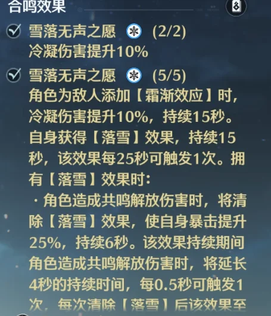
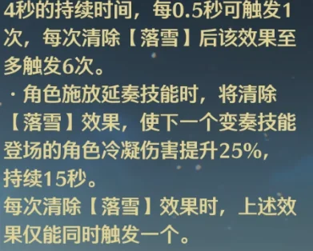
在3.5版本，秧秧·玄翎与穗穗也是共用一个声骸套装，且由于它们的技能效果不同，呈现了不同的效果。
这样的改动是为了减少套装需要刷取的时间、同时减少开发的时间。
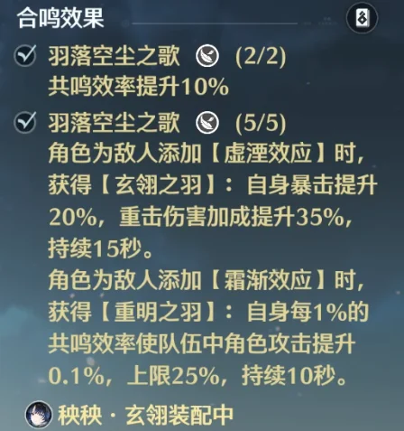
而馨的声骸套装，则是学习了《鸣潮》官方的这一设计。
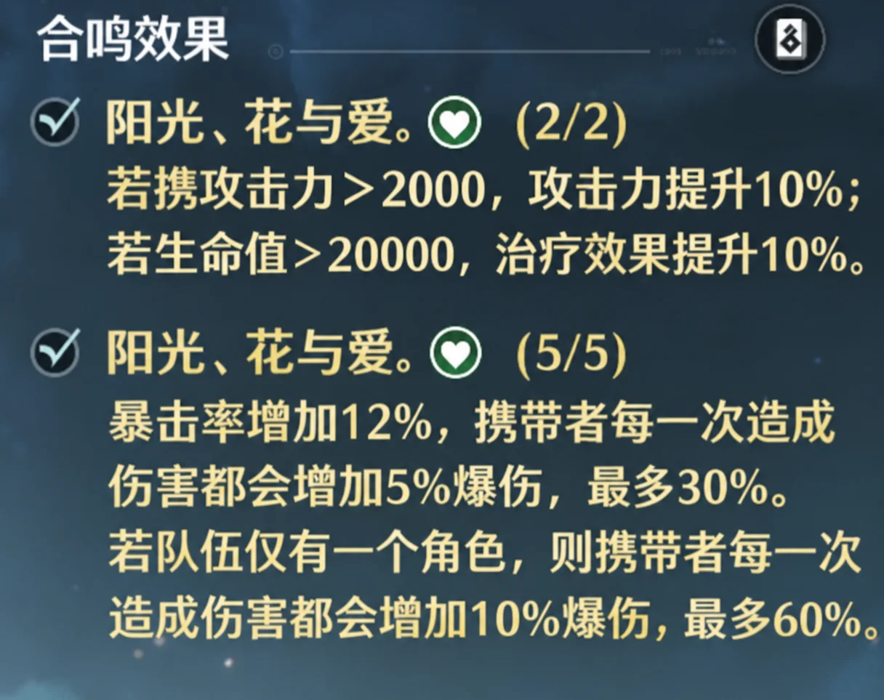
馨需要叠生命值，所以二件套给予她治疗效果，且因为馨也可以吃暴击率，所以五件套的效果对她有益。
对于五件套额外效果（队伍仅有一个角色），是米约卡坎德7名可玩角色中的另一个角色使用的效果，与馨无关。该角色不在本文档展示范围内，故此处不展开其具体机制。
5.馨相较于其他治疗辅助，并没有需要共鸣效率，这是有什么考量吗？
馨的共鸣能量由机制自给而非词条供给：绽放状态下造成伤害、使用共鸣技能时，会为全队补充共鸣能量，共鸣技能同时缩减自身共鸣解放冷却——她的共鸣效率没有消失，而是被内建成了战斗循环的一部分。预期设计，待 demo 验证。
该设计成立的前提是长循环轴：在 50~60 秒为周期的队伍中，后台充能与自身补充足以使第二轮循环开场充满共鸣能量——登场即共鸣技能+共鸣解放，随后立即切人，全程无需共鸣效率词条。
代价同样明确：在 30 秒普通循环队伍中，馨的在场时间与绽放态占比被压缩，机制自给量不足，第二轮循环会在充能上卡壳——无效率词条卡充能是必然的，这就是馨的缺陷。要让她在短轴循环顺畅，玩家额外补共鸣效率词条。
3.6 馨基础数值模拟
3.6.1 馨基础数值模型总览
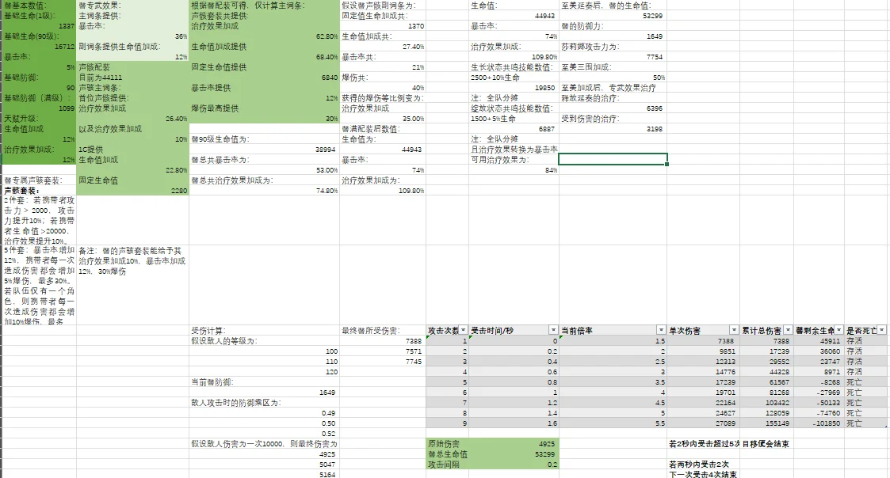
该数值模型包括：馨的基础数值、馨90级有效数值总览、馨技能（仅共鸣技能）治疗数值、至美延奏具体数值表现、目移后台承伤计算。
3.6.2 馨技能数值及其基础数值情况
主要数值：
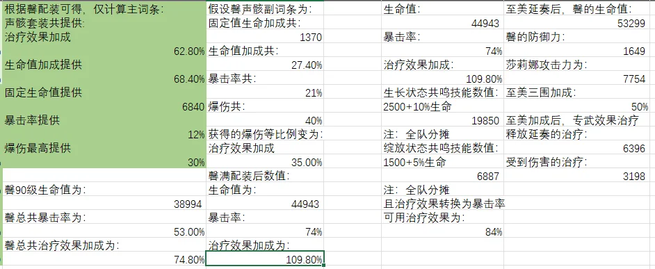
生长：
在生长状态释放的共鸣技能所受公式为：（固定值+倍率）*治疗效果；
其中，由于在生长状态馨的全部暴击率都将转换为治疗效果，故当前治疗效果为：
109.8%+74%=183.8%
故：共鸣技能-沐浴所受治疗数值为：（2500+10%*44943）*（1+183.8%）=19850。
该治疗将全队分摊，若队伍其他角色满血，馨一次共鸣技能-沐浴可以治疗自身约44%的血量。
绽放：
在绽放状态释放的共鸣技能所受公式为：（固定值+倍率）*治疗效果；
其中，由于在绽放状态馨的全部治疗效果都将转换为暴击率，溢出的转回治疗效果，故当前治疗效果为：
(74%+109.8%)-100%=83.8%
故：共鸣技能-承接所受治疗数值为：（1500+5%*44943）*（1+83.8%）=6887。
该治疗将全队分摊，若队伍其他角色满血，馨一次共鸣技能-承接仅可以治疗自身约15%的血量。
结论：
可见，在生长状态下，馨所能够提供的回血效果相当夸张，几乎只需要奶一下就能回到健康血线，只要合理控制共鸣技能的冷却时间，就能够调整馨残血后转为生长态回血会占据循环轴多少时间。
同时，由于馨的变奏技能，馨会自动切换至绽放态，若需回血，馨变奏后需要使用共鸣技能-承接才能够快速获得100目光来切换至生长，而这样便会让馨在生长态等待冷却时间回血；用普攻、重击来获得目光，也会浪费切换时间。所以——目前的数值完全可以支撑馨的核心设计目的：若无视馨的消耗，馨就会浪费时间。
3.6.3 馨后台受击可接受次数及其数值对应
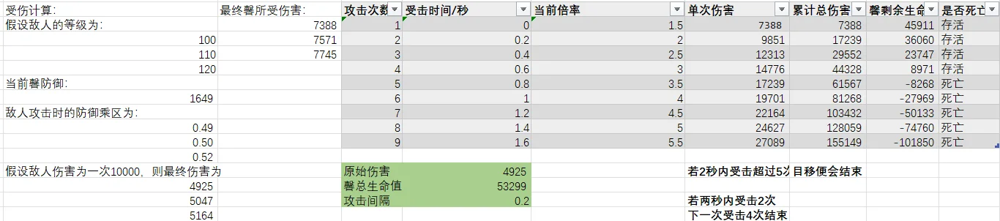
该表格展示了馨在使用延奏技能为队伍增加目移效果后的受击情况。
其中：敌人的等级、馨的防御都会影响此伤害的防御乘区情况，在表格中使用的是敌人100级、伤害为1w的情况。
而表格展示：当馨在2秒内，前台角色遭受100级敌人若连续受到5次受击时，目移便会被打断，设此次攻击间隔为0.2时，仅需0.8秒馨将会解除目移——不过，高难之中boss的输出频率大概会在1s到2s中，实际上馨受击解除时间约为7.5秒（1.5*5）。本表格并未展示受击后间隔2秒未受伤的情况，但我做了数值计算：当前台角色在2秒内受击了2次，在2秒时间间隔后，倍率重新回到1.5时，馨需要受到4次结束。馨总共受击了6次，比2秒内连续受击多了1次。所以：若前台角色在2秒间隔受击较少时，可以控制每次受击能超过2秒间隔外，馨的生存还是具有保障的。
不过：馨有个天然的劣势——当环境为极高频率的伤害（即便伤害较低），最终滚雪球所造成的伤害对馨来说也是巨大的；设置dot环境、高频伤害环境，便是限制馨的手段。
3.7 莎莉娜与馨的配队适配
当看完莎莉娜与馨的技能机制、设计目的后，其实不难判断——莎莉娜与馨是相当适配的队友，在某种角度来说，馨算得上是莎莉娜的专辅。
1.馨极大补强了莎莉娜的输出
在莎莉娜章节时，暴击率、爆伤的锁定是莎莉娜的核心机制之一，因为暴击率、爆伤的锁定让莎莉娜的数值膨胀力度在接受范围内，且可控。
但在3链之前的莎莉娜，具有一个明显的缺陷：她的暴击率是不满的。这就说明，在莎莉娜的伤害之中，近乎有一半的伤害是不暴击的，而莎莉娜的魔剑又是极高倍率的输出，若不暴击，将会与暴击后的伤害差距很大。其他辅助对莎莉娜的帮助有限，像《鸣潮》官方的守岸人（提供双爆）、莫宁（提供大额增伤）这些弥补不了莎莉娜的暴击缺陷。
而馨的夺取（暴击补足）机制，恰好是对莎莉娜的完美辅助，她能够让莎莉娜即便未暴击，也能追回近半差距的伤害，大大的加强了莎莉娜的输出。
莎莉娜三链满爆的机制，算是彻底解绑馨的方式。
2.双人形成互保机制
在莎莉娜进入断罪状态时，她拥有组件阻伤机制，能够帮助玩家偶尔失误时阻挡一次伤害，同时也是为了弥补莎莉娜极低的基础生命值。而馨的目移转伤机制，就是对莎莉娜低基础生命值的最好保障。
而莎莉娜也能够反过来保护馨，组件阻伤机制能够阻挡一次伤害，让玩家操纵莎莉娜时不会被“持续受击”，至少能让玩家反应过来，从而，保护了馨，让其不一定会因玩家的失误快速濒死。
3.莎莉娜长轴拼图
莎莉娜的队伍输出轴长约为60秒，而大部分辅助都无法达到这个长度，虽然莎莉娜可以充分利用延奏技能让其他辅助也能覆盖其输出周期，但是馨是对此的完美补足——馨本身就有长达60秒的buff，完美适配了莎莉娜。
4.叙事上的共鸣
在莎莉娜的故事中，莎莉娜通过漫长时间终于学会了“魔法即是爱”的道理，但身为一名永恒的孩童，根本不可能施予爱以他人。可后续莎莉娜收养了一个女儿，成为了“母亲”，让莎莉娜真正拥有了爱他人的权力，真正可以去尝试创造魔法。
这个女儿最后回到了故乡，为故乡的重生付出了生命。
馨的故事之中，在她最彷徨之时，认识了一名医生，那名医生拯救了馨的故乡；馨在她死后也追随、继承了她的美。馨故事里的那名医生，就是莎莉娜的养女。
莎莉娜与馨的适配，不止于机制层面的互补，更是两段命运在叙事上的交汇。
四、角色叙事设计
4.1 莎莉娜故事背景
叙事关键词：“永恒”、“魔法”、“不变与变化”。
首先指出，由于本文档并不是主要展开叙事为主的，所以并不会贴入故事背景全文。
其中，莎莉娜的角色文档故事共有五章，其第五章标题因涉及核心剧情反转，此处刻意隐去。分别为：《孤高的公主》、《夜中排练》、《魔法的本质》、《妈妈》、《孤高的■■》。
在此，我只会展示《孤高的公主》和《魔法的本质》。
4.1.1《孤高的公主》
我考进了这座城市最前沿的工程科学院。少时的梦终于铸型——总算可以抵达我的夙愿。科学院有位严厉的导师，前辈们提醒过我，她叫莎莉娜·洛芙莱斯，对新人极其严苛。但我不以为意——再怎样也比不过我硕士期间的导师那般咄咄逼人。
越深入这座城，我越惊叹它的精密。一切都像巨化的机械手表，稍有不慎便会瘫痪整座城或招致死亡。第一周我就体会到了这无形的压力，修理前辈留下的粗糙齿针时，连我也紧张得流汗。正紧张时，身边突然冒出一个九岁模样、浑身散发魔法气息的小女孩。我的心情烦躁起来。
“不要打扰姐姐哦…这里不是你能玩的地方”
女孩没有说话。反而在短暂的停顿后，她用稚嫩的小手飞快地操纵齿轮，速度与精准度惊人，就如同魔法般，我还没反应过来，修复就已完成。随后，她收起踮起的脚尖，用余光瞥向了我。
「之前我没有见过你。」
“……我是最近才调来的”
又是一次停顿，她看向了我的右手。我紧张地收起了出汗的右手——被孩子看到这副模样，确实有些难堪。
「我介绍一下自己吧，我的名字是莎莉娜·洛芙莱斯」
这便是我与这位“公主”的初遇。得知那个女孩竟是导师后，我提起了十二分警惕，因为我总发现不了她何时出现在身旁。后来，我凭优异表现逐渐深入这座城；她常常陪在我身边，在我偶尔处理事务发饿时，总会带着便当放在我的桌前。他人眼里，她性格恶劣，总是用眼神和言语击溃反驳者；但我知道，她有这个资格——这座城现在的模样就是由她亲手所缔造的。
可我，
所要做的便是毁掉这座城——这便是我的夙愿。
自我幼时，我的家、我的爱就被军联摧毁——而这座城，尤其是这座城的城主却对此无动于衷，任凭他们在外征服。命运的那夜，我戴上了这些年我暗地研究的手部器械，打算从根源上毁灭这座城市。
这座城欠我的。
可月光下——她还是出现了。
我的导师、我在科学院新的依靠，那位孤高的公主，就站在我面前的水坝上。
我从一开始就被盯上了。
我就不该在和她初遇的那天决定破坏那个装置。
我就不该将螺丝刀藏在右手。
「孩子——迷途知返吧」
怎么可能呢。我付出的一切，都是为了这一天。我不顾她的声音，将器械对准水坝最脆弱的区块。就在我即将发射时，天空传来震颤的巨响——那是一把300米长的巨剑。随后，这位公主挥舞手中的剑刃，将其插在地面上，那把巨剑也同步降临在我的头顶。
接着，是无止境的撕裂与破坏。
闭眼的最后一刻，我看见了她的表情。
那是悲怜的俯视，是泛着泪光的憎恨。
——对不起，我那孤高的公主啊。
4.1.2《魔法的本质》
莎莉娜有一个幸福的家庭。父亲是名声正旺的魔术师，而母亲则是一名诗人。在幼时，莎莉娜总是幻想着父母睡前给她读的奇幻小说中的魔法，希望自己可以运用魔法的力量——而这并不是妄想，因为她的父母的确给她施展过魔法。
那是一种很温暖的力量，一瞬间就能扫荡莎莉娜在外的一切疲倦让她安稳入睡。
那是一种很幸福的力量，一瞬间就能擦干莎莉娜的泪水，让她不再哭泣。
魔法，也成为了莎莉娜一直想要触及的东西。但遗憾的是，现实并不存在魔法；它只是一种幻想的力量，一个虚拟的假说。站在自己九岁生日蛋糕前的莎莉娜意识到这一点，停止许下了每年都许过的愿望。莎莉娜又哭了起来，这是她今年数不清的一次了。
她的父母看着她，蹲下身子，再一次施展了魔法——奇妙的是，莎莉娜立马幸福地笑了。
也正是这一刻，她的右肩长出了声痕。起初莎莉娜还很开心，因为这意味着她成为了共鸣者，也许就可以施展魔法——但她错了。自产生共鸣起，她就停止了生长，身体永恒地停留在九岁的模样，从来没有改变过。刚检查出这个结论时，莎莉娜都不会笑了，她永远长不大了——但她的父母依然对她保持着信心，父亲也给她施展了魔术，在空无一物的手中变出一支纸花哄她开心。几乎每一天，她的桌前都会增添一支新的纸花，她也逐渐重拾了对生活的信心，并决定学习科学，渴望用自己的手创造真正的魔法。
十年、二十年、三十年。直到自己的父母已经老了，直到自己快四十岁，她依旧没有成功，她依旧没有变化——还是一位9岁孩子的模样。不变的，还有父母对她一如既往的关心与呵护。直到他们很平静、很幸福的老去了。
莎莉娜登上了工坊，成为了这座城的缔造者之一，她用自己出色的工程知识，将这座城雕刻成绝美的模样。米约卡坎德，美学之城、浪漫之都，是她引以为傲的杰作。只是她从未踏出过这座城，仰视这座城的模样，她整日将自己关在工坊，成为了这座城秘密的存在。
她依然没有创造出魔法。
或许是思念成疾，又或者是孤独疯了，她暴力拆开了父亲送她的纸花。撕开第一支时，她看到了纸花上点点的字迹，但已经摧毁地看不清了。所以她拆开了第二支——
那是一首诗。
是母亲写给自己的诗。
她撕开一支又一支纸花，看到那近乎万朵纸花中藏匿的秘密。从得知自己永恒不变那日起，母亲就为她写了一篇又一篇优美的诗篇，描写莎莉娜的可爱与美，描写莎莉娜的顽固与脆弱；而父亲则用手将诗篇皱起，折成纸花，并用魔术的方式送给莎莉娜。在她准备撕开最后一朵纸花时，她停下了——她看到了纸花表面上的字。那些字扭扭捏捏，只汇于一句话。
「愿你的快乐永恒不变」
她不舍得继续拆下去，她不舍得继续看下去，即便这朵纸花里还藏了好多好多话。
但她不敢再拆了。
最后，她久违地留下了泪水。
她想起来了，9岁生日那天父母究竟施展了什么魔法——那只是一个简单的拥抱。但足够温暖，足够让莎莉娜幸福。
她也总算懂得魔法究竟为何物。
魔法，只是一段瞬间的幸福。
魔法，只是一个简单的拥抱。
魔法，
是爱。
4.2 莎莉娜叙事与机制的互文和统一
1.能力即机制，能力即故事
莎莉娜的共鸣力、核心设定即是“永恒固锁”，“永恒固锁”在叙事中是绝对的核心，她是创造三百米巨剑可靠前提、外表为何为孩童的原因、莎莉娜故事中悲伤的本源。在游戏层，“永恒固锁”也是其核心机制——进入断罪状态后，锁定暴击率和暴击伤害为50%/200%。
同时延奏技能“永恒”，将自身buff锁定，也是对此的另一体现。
作为造物者、魔法师，我无时无刻都在创造。我明白，即便外貌没有变化、身体没有成长，我的灵魂、我的思想、我的热爱也能够塑造全新的自我。无止境地创造让我发觉，我每天都在变化、我每天都在成长。 ——选自莎莉娜语音集：突破5 |
2.工程学与魔法的冲突及其结合
莎莉娜的常态技能，多以使用大剑来进行攻击，而这把大剑是以工程学复现魔法所作，所以会有“点火”、“灼炎”等工程与魔法的词汇。
在技能的机制上，莎莉娜的每一次攻击都在诠释“魔法”，在断罪状态下则更甚：
组件随莎莉娜的攻击而攻击，不仅有一种“器灵”和“魔法剑”的感觉，同时还有一种工程上的“浮游炮”效果。
控制手中剑便是控制三百巨剑：不仅有一种工程学的操纵感，同时还有一种魔女控制“魔法巨物”的奇幻色彩。
呵呵——这是我得意的“巨”作。这把剑的长度大约300米，与这座城的灯塔高度相近，而控制这把巨剑的装置，便是我经常带在身旁的十字剑。虽说它是一把形似十字架的剑刃，但实际上它的架骨是中心定位器的XY轴，可以帮助巨剑进行定位。如此一来，我只需要简单挥动我手边的武器，便能控制这把巨剑进行扫——呜——你干什么？ ——节选《夜中排练》 |
3.固有技能“名为爱的魔法”增加护盾的缘由
作为一个主C，不仅延奏是辅助性机制，而固有技能“名为爱的魔法”不仅会自拐增伤，还会给队伍角色提供护盾，这是因为什么？
在游戏层：由于莎莉娜基础生命值极低，固有技能“名为爱的魔法”就是为了用增加护盾的方式简单提高莎莉娜的容错率。
在叙事层：莎莉娜不仅是米约卡坎德的缔造者，同时也是如今城中的秘密武器、其守护者。并且，在莎莉娜的世界观中，魔法就等同于爱，而爱的一种具象化表现，便是为他人和自己增加护盾、守护一切。
过去如此多年来，我被父母爱着，被他人当作孩子保护着，被世界宽待着。可我从未有想过，我可以尝试着去爱其他人，我可以拥有爱他人的权力——我也可以实现魔法。 ——节选《妈妈》 |
4.3 馨故事背景
叙事关键词：“美”、“向日葵”、“注视”。
首先指出，由于本文档并不是主要展开叙事为主的，所以并不会贴入故事背景全文。
其中，馨的角色文档故事共有五章。分别为：《我喜欢你脸庞的美》、《我喜欢你性格的美》、《我喜欢你内在的美》、《我喜欢你灵魂的美》、《我喜欢你》。
在此，我只会展示《我喜欢你性格的美》和《我喜欢你内在的美》。
4.3.1《我喜欢你性格的美》
馨，又在呵护花店后的“自然花园”了。
自然花园是馨在店里额外、偷偷地增添了一小片空间，她将花店的后房扩建了些许，并且没有放任何家具以及用品——因为她打算把一片祥和的自然吸引过来。馨小姐还喷了喷最近刚买的，没有任何腐蚀性、甚至对人体有益处的自然香水，加上旁边栽培的花朵，将自然花园区域装饰成一个绝美的小后花园。
在外买花的人肯定没有想过，原来这家店最美的地方，在于前台的门后。
平常，馨总会在店的角落看着自己的后花园，尽量不把脸转到店内；而大多数人前来这里买花，也只会看到花店老板在角落作画、沉思——虽然光看侧脸都觉得很美，但不会深入，毕竟进店是来这里买花的。
所以在很多人眼里，坐落于主水旁路23号的馨香花店的花店老板，是一个内媚的人。不过，如果有时候员工刚刚下班而馨还在时，当你结账，你就能看到她那美丽、温暖的笑容，甚至能见识看起来完全不一样的馨——那活泼的性格、爱开玩笑的、甚至有些调皮的女孩。
花店的收入一直相对可观，可很多老顾客尤其是娜丝耶奶奶，总是会向她问，为什么你还要干那么多辛苦的活呢——你要保养好自己啊。倒是这些问题从来没有被其他人放在眼里，因为只要你见过花店老板的脸庞，就能看出她根本没有保养的必要。
后来，才有些陆陆续续的人得知娜丝耶奶奶为何这么问。
馨的手上，长了很多很多的茧，甚至店中的员工曾经瞥见她后背的伤疤。
这对于一个美人来说，可一点不美啊。
——馨从未忘记自己的故乡，虽自己的故乡早已因各种各样真正内心美丽、灵魂纯粹的人、包括她自己给救助了。她的故乡早已成了一个幸福的城镇，以“乡村”为美学，不再害怕悲鸣与伤痛。
馨呢，则总是会抽时间回到那个地方，帮助老弱病残们抬水、搬家、重建，这也是为何她手内侧总有茧的原因。有人说，她手上的茧才是她真正美丽的地方——但她否认了。
茧从来不是美的，那一定是丑陋的。
伤疤也不是美的，那是让人痛苦的。
她只认为人的善良、人的爱、人与人之间的尊重与美好，是真正美的事物。
而她想要做的、想要追求的，便是将一切的丑陋、一切的痛苦，都从他者的目光中带走。
所以她即便背负更多，也愿意为他们付出，愿意将“美”普及在他们身上。
馨。
果真好美啊。
4.3.2《我喜欢你内在的美》
馨的诞生，也是出于美。
馨的亲生父母，都是米约卡坎德城区名望之人，即便他们曾并不相识，也美丽地做出了一个共同的决定——他们为解放那片灾区，前往了那里，帮助那里的人。馨的父母也正是在那里相识、在那里相爱、在那里诞生了馨。一切都像浪漫小说般、如此美。
可馨连妈妈、爸爸都还不会喊的时候，一场小型悲鸣席卷那一片土地。馨的亲生父母为了拯救他们一直在坚守、保护的人们，牺牲了。那么美丽的邂逅，最终却那么痛苦、那么丑陋地死去了。
馨也成为了孤儿。
在之后，她被一直受父母照顾的家庭收养了。
“馨”也正是养母给她起的名字。
养她的家庭非常清楚她的父母是怎样的人，他们的孩子明明不用承受这些痛苦，他们的孩子明明应当是一名富养的千金。
所以——养她的家庭的养奶奶、养母，以及她在这个家庭里的哥哥，为了让她更美一些、为了让她得到本应得到的幸福，不远万里在城中赚取钱财，为她修建最好的房间、买最豪华的衣裳。
——因为她是救命恩人、是那名望之人的千金，她必须如此美。
后来，馨长到七八岁，懂了事。
她学着养奶奶的编织，学着妹妹涂鸦，将养她的家庭送给她的贵重衣物剪了又剪，并拼接一些平常的布；让那些贵重衣物、裙子变成了好几件平常穿的普通衣服。她将这些衣服送给家庭的每一个人，自己也穿着，她不需要家庭的人为她付出这么多。
养奶奶、养母、哥哥，都掩面痛哭。随后对她笑着，说：
“馨，果真很美啊！”
之后，馨长大到十几岁，学会了画画，哥哥送给她一个老旧摄像机，她也学会了摄影。并且，她也尝试着用这种方式捕捉这个家庭的美、家人的美。她认为，她的家人的笑、她的家人的温柔，远远比她美，比她更值得在镜头、在画框之中。
不过呢，家人们还是推推她，笑着给她拍了照、画了画。
如果……一直这么幸福就好了。
此后不久，又是一场毫无预兆的悲鸣，这个地方无比频繁着悲鸣，连米约卡坎德都无可奈何——可正因为这片土地承载太多美、太多美好又温暖的记忆，大多人就像是爱着这片土地一样，绝不愿意搬走，宁愿与悲鸣对抗。
馨的新家庭，也被牵连。
养奶奶、养母直接被空间撕碎，哥哥为救她与妹妹，直面了悲鸣，牺牲了自己。
而妹妹还是被牵扯住，受了重伤。
在这场悲剧下，不美的画布上。
馨拼了命地给妹妹止血、拼了命地保护妹妹。
“请再坚持一下……马上、马上我们就能出去了。”
她无比希望自己能够代替她痛苦、能够代替她受到伤害，以报答这个家庭的一切养育之恩，她不愿让这份家庭曾经的美好、曾经的美就此消逝，她无比希望——唯一活下来的妹妹能够继续美下去。
正是此时，她觉醒了共鸣能力——吸引了妹妹的目光、吸引了妹妹的痛苦。
但痛苦会转移，伤口不会。
妹妹依旧命悬一线，馨还想要努力。
可妹妹拒绝了。
她笑着、用手抚摸着在她生命中最美的存在——馨的脸庞。
“不用了姐姐……
“就让我，再好好看一遍你的美吧。”
馨因悲痛又一次施展了能力。周围的狂风、周围因雨而散发的酸味、家人们与她共同在家门口种植的向日葵，以及在馨面前的妹妹，无一不深深注视着馨的脸。
“馨姐姐……果真很美啊……“
4.4 馨叙事与机制的互文和统一
1.能力即机制，能力即故事
馨是一位将前台角色受到的伤害转移给自身的辅助治疗位，而为何她能够做到“转移伤害”，为什么她会替前台角色受伤——一切都能在她的叙事中得到解释。
馨的共鸣能力为夺目，能够夺取人的目光、夺取人的情感的目光、夺取人的感受的目光等。而她所做最多的事，就是去尝试夺取人们的痛苦与不安。
因为在叙事中，她帮助他人、夺走他人的痛苦的目光，所以在机制上，她能够、她会去承受前台角色的伤害。
馨生活在注视与被注视中，“夺目”正是一种强制的注视方式，这是她无法控制的、难以割舍的悲痛来源。
她站在那名医生站过的地方，柔弱的手举起那极具重量的旗帜，并挥舞着。 她使用自己的能力——将她人的目光、她人的痛苦、她人的不安、她人的惶恐全都吸引在自己的脸上，并向他们说，他们依然有追求幸福的力量。 ——节选《我喜欢你灵魂的美》 |
2.被注视与主动注视
在3.4中关于馨的记忆点已经陈述非常清楚：
馨因自己能力的被动吸引和主动夺取，很多人都是“被动”的注视馨，那些人究竟对馨感受如何？究竟是否是真的看着馨，馨无法定夺。且因为自己生命重要的人都早早死去，馨有过彷徨和怀疑——是否自己的美是一种诅咒？让馨逐渐不敢去主动注视他人。
在主线过程中，玩家将会带馨走出犹豫、怀疑的深渊，并让她“主动注视”玩家。
在游戏操作方面，由于需要控制馨的血线，玩家需要“主动注视”馨的血量才能保障馨不会危险，影响队伍整体的循环。
她的目光向往至美，她的灵魂纯洁完美；她是美的信徒、是一切美的起点，我愿意为她而付出我生命的一切——好啦好啦……我不读了。虽然我的确不会否认自己的美，但看到其他人对我美的评价，还真挺不好意思的。嗯……所以，你是怎么看我的？比起其他所有人对我的评价，我更希望听到你的回答。如果可以，我希望成为你眼里唯一的美。 ——选自馨语音集：突破五 |
3.核心辅助功能都是增加下限，而非提升能力
馨核心辅助机制“目移”、“注视、夺取”，都是提高队伍的整体下限，目移是提高连招的稳定性——让玩家不会因为偶尔的受击影响循环；夺取是让未暴击的伤害追回暴击近半差距——让玩家减少凹度，并不会因为未暴击而感到失落。
这些机制都不是提升队伍，而是拔高队伍，这与馨所作的和她能做的也是相同的。
——馨并没有出色的力量、也没有过人的力气。
——馨只是帮助他人消解痛苦，而非给予力量。
没有过人的力气，也没有挥剑的勇气……事实上，我还挺怕疼的。我如果能擅长战斗就好了，那样的话，我也许就不需要再看到他人的伤痛了。 ——选自馨语音集：馨的烦恼 原来太美会被动地吸引这么多目光，你看……人太多，连花都有点枯萎了。所以我有想过，要不要用自己的能力把他们对我与这家花店的美的追求给吸过来呢~ ——节选《我喜欢你脸庞的美》 |
五、总结
“机制服务于叙事，叙事生长出机制”
——这是贯穿本文档的设计原则，也是我对角色设计一以贯之的判断标准。
一个角色的技能，若仅有超模的数值、华丽的演出与复杂的操作，而无法回答“为什么是她”这个问题，便只是空壳；反之，若叙事无法落到玩家可操作的机制之上，角色的命运就只能停留在文字里，无法被“玩到”。
二者割裂，是许多角色设计平庸的根源。
在莎莉娜身上，这一原则的落点是“永恒固锁”——它既是她九岁停止生长的悲剧根源，也是断罪态锁定暴击、延奏锁定 buff 的机制原型。她追求“变化”，能力却锁死“变化”；这个悖论，从故事一路贯通到数值模型。
在馨身上，这一原则的落点是“夺目”——叙事中她夺取他人目光、承载他人痛苦，机制上她便承接伤害、为未暴击的伤害保底；玩家为守护她而不得不“主动注视”她的血量，恰好复现了故事中馨渴望被主动注视的心情。
这正是一名角色从“成立”到“动人”的距离：不只是好玩，而是在玩的过程中，让玩家亲手体会到角色的命运。
本文档所展示的，不仅是一份技能清单，而是完整的设计链路——从核心吸引力与市场定位，到技能机制与设计目的，再到数值模型的可行性，以及最终回落到“机制与叙事如何统一”。我试图证明的，不是一个“强”的角色，而是一个“有理由、可落地、且经得起追问”的角色。
附录：
莎莉娜/馨基础数值模型（Execl）
由于两个Execl文件有跨文档数据，可能需要两个文档同步打开。
[莎莉娜数值模拟.xlsx]
[馨基本数值模拟.xlsx]
莎莉娜详细设定文档
共鸣能力：永恒固锁
频谱检验报告
「米约卡坎德共鸣档案025号」
「受验者-莎莉娜·洛芙莱斯」
「美学-剑与魔法」
注：此档案测试时间距今已度过多年时间，档案或有过期内容。
共鸣能力概述：拉贝尔曲线呈现稳定不变状态，偶尔会因呼吸产生微小波动，检测结果判断为自然型共鸣者，声痕位于右肩处。
受验者自十年前便停止生长，明显可判断于是由共鸣产生的副作用。受验者可以将自身或所造事物的物理状态恒定不变，具体可以表现为身体细胞分裂不会磨损，永恒保留于最初状态；或是让所造物体物质状态不变以突破能量守恒，是否能作用于抽象概念和力仍在测验中。
标注：以本人亲自测验可得，仅能作用于自己所造之物的物质形态的永恒不变，抽象或无具体物质形态的事物无法进行作用。
「这篇报告已经完全过期了……是时候进行新一轮的测验了」
「不用——我认为没有必要。
「毕竟，我从来没有变化过。」
超频诊断报告
受验者拉贝尔波形检测图没有波动，时域表示稳定，无任何波动倾向。诊断难以结论。
诊断结果：超频临界值极高，稳定性极高，无超频可能性。
无过往超频史，拉贝尔曲线无波动。
标注：自共鸣起，共鸣作用随年龄的增长而增强，但那不是能量的增强所致，而是对共鸣能力的运用相比少时更加成熟。
馨详细设定文档
共鸣能力：夺目
频谱检验报告
「米约卡坎德共鸣档案109号」
「受验者-馨（Scen）」
「声痕位置-左腰部」
「共鸣类型-突变型共鸣者」
「美学-绝美、至美、完美」
共鸣能力概述：
拉贝尔曲线呈波状、极其规则，曲线形态极其美。
受验者可以通过共鸣能力使周遭一切目光被吸引至她的脸庞。一切目光包括：情绪、感受、频率。使用共鸣能力强度越高、越能够夺取更深层的物质的“目光”，最终达到夺取频率的“目光”。虽说夺目的共鸣力是于受验者主动释放，可在平常时分与她相处，意志不够坚定者会不自觉地将目光移向她的脸庞；甚至发现，这种被动的夺目与受验者本人打扮的用心程度呈正相关。
“馨小姐，请问你如何作出这么美的画作的？”
“哈哈……其实很简单、也有一些作弊吧~简单来讲，我将自然界的目光夺取到了，让他们自己到我的画上。很厉害吧？我的美连自然都忍不住多看几眼！”
超频诊断报告
受试样本波形相对稳定，但存在异常波动期，主要是因受验者自行使用太多共鸣力导致。
诊断结果：超频临界值正常，稳定性正常。
存在过往超频史，起因为让受伤的人们不再痛苦——将他们的痛苦情绪与疼痛感受全部吸引至自身。如果高强度使用共鸣力，有可能能让极大范围人不受控制地望向受验者脸庞，由于情感、感受也被夺取目光，很可能会因此忘记呼吸。
“请再坚持一下……马上、马上我们就能出去了。”
“不用了……姐姐。
“就让我，再好好看看你的美吧。”